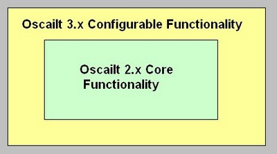
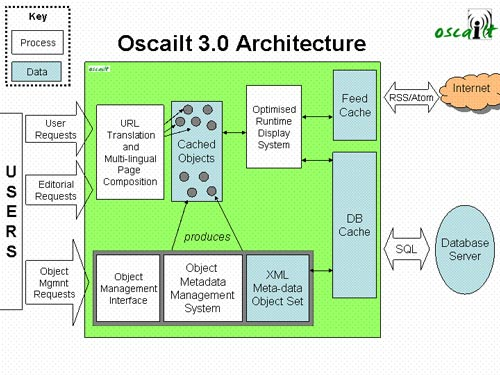
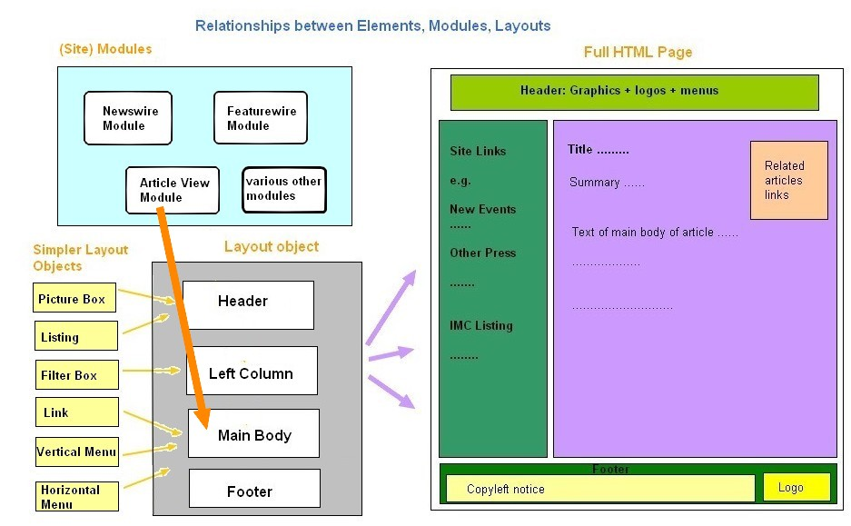
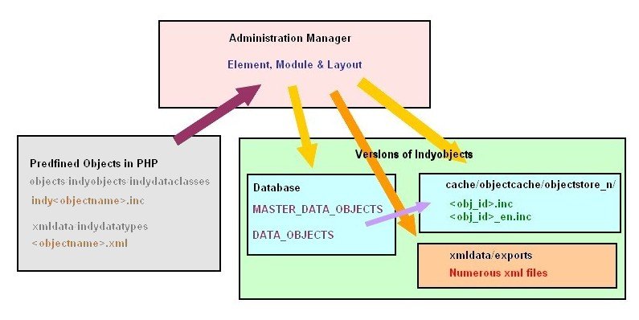
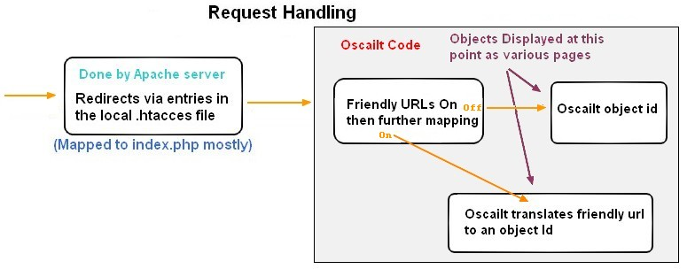
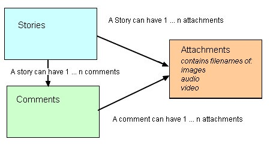
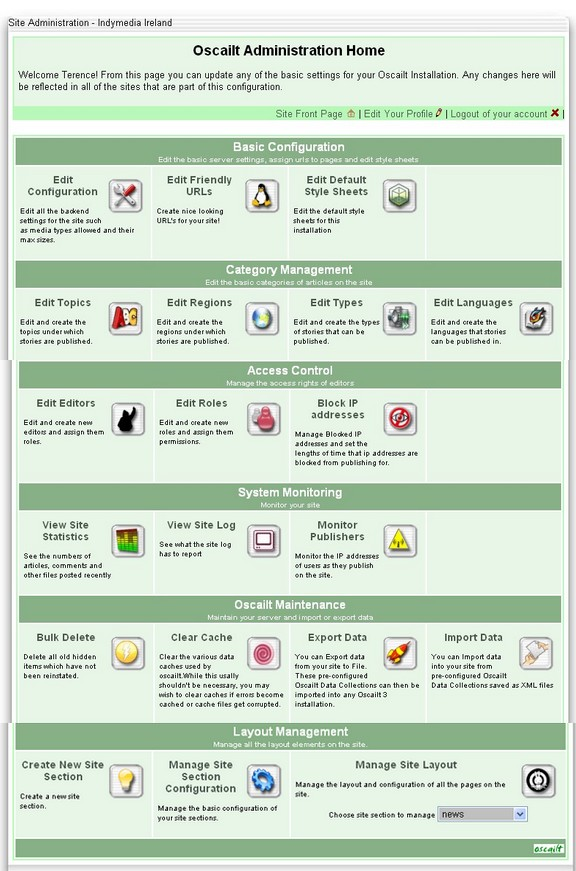
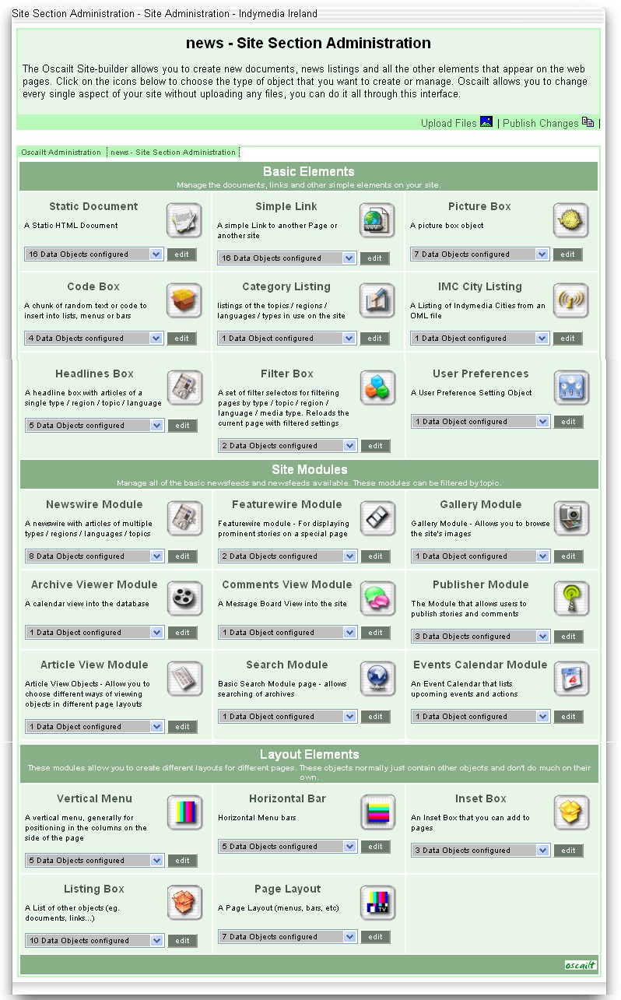

One of the other key differences is that some of the code is now cached. The idea is that instead of doing all the file includes and the meta layer processing each time when the PHP is executed, these are all saved to the cache which then saves on execution speed while allowing for greater modularity of the source files without impacting performance. In effect the dynamic configuration that allows flexible control over the site layout which is achieved through the new meta layer, is effectively compiled in the cache.
Another key change is that nearly all of the text in the code has now been moved out to configurable XML files.
This change in theory, makes it easier to customise Oscailt for different languages as it just requires the
text in the XML files to be changed rather than going through all the code. There are other configurable aspects
of Oscailt which are controlled by these XML files too such as certain options or components active in various
instances of configurable and displayable modules.
Along with this document, there are a companion set of automatically generated html files produced by
phpDocumentator 1.3.0
which is a freeware PHP tool that can analyse PHP code and extract out all the classes and functions and
the class relationships or hierarchy.
As with trying to understand any code base, there are many ways to view it, in terms of the functionality that
you are interested in and what perspectives you take. For example you could look at it from the perspective of
how an incoming request is handled, or in terms of the internal data representation in terms of objects.
Another possibility is to look at it from the html or site configuration points of view. When one is able
to understand the code from multiple angles then you are in a strong position to make the most far reaching
changes.
The diagrams below attempt to give some insight to these layers.


It produces cached versions of every object on the site. The 'displayable' objects - menus, pages, bars and inset
boxes are specially cached to include cached versions of all their contained objects within their cache file. This
limits the number of includes that are used at runtime as each page only has to include its menus, bars etc, the
objects contained in these objects are contained within the cache files themselves.
The modules in the system are designed to produce as much static html as possible. Calls to the runtime system are
only invoked where statically caching is impossible (due to automatic changes of contents such as in newswires).
Suffice to say that Oscailt makes every attempt possible to limit the amount of code that is executed at runtime.
As with many sites, the layout and placement of banners, titles, stories, text and links is controlled through
careful use of HTML tables. So in order to understand the layout, it is important to be familiar with HTML
tables. It ought to be noted that when HTML was originally specified, tables were never intended to be used for
layout purposes but instead were primarily for presenting data, but that's history.
One of the most important consequences of this is that it imposes a certain order on how the HTML is generated.
So for example, the code needs to generate the header section first, followed by the right menu, then the centre,
then the left menu if included and lastly the footer. In theory this order could be changed by storing the
blocks of generated HTML and re-ordering but in reality no one is likely to code it that way and it would also
happen to make it both much harder to understand and to debug since if certain critical HTML tags are not closed,
it can mean the entire page is not rendered properly by the web browser.
In fact this is one of the main reasons why the public are not allowed publish stories with HTML tags in them
except for a few basic ones, because it would be so easy to break the overall HTML of the page and would require
significant human effort to continually fix it.
It is clear though that the original rule about the order of outputting the HTML from the server is still valid
and holds in this case.
The object id for the page layout is stored in the cache file for the original target page as $PAGE_LAYOUT_ID
and this is how Oscailt, then determines which cached page to load for the associated page layout.
A typical scenario of the way Oscailt uses this feature would be the following code snippet.
So you could configure for example two versions of the newswire module, where the first might be for
press releases and the second for news stories. The layout of each could then be different on the site
by associating each of them with a different layout page.
And this is where the modules form the bridge or connection with the layout
elements. For the Indymedia Ireland site as of 2006, there are 5 basic layout elements:
For the other layout objects there are similarly numerous different versions configured for them too.
To help explain this the diagram below attempts to illustrate these relationships for the case of the
article view page layout. This is not an exact copy of any known site but it is close enough and
serves our purpose here.

In the diagram above, the layout object shows only a Header, Left Column, Main Body and Footer boxes, but ideally
the example should include boxes for left-column and right-column.
For the other layout types, the options will be a bit different, but the general design approach is the same.
In the page layout administration page for the page object, the selection for the main body is not
for the main contents of the page, but for selecting things like the embedded 'code box'.
To specify the main contents of the page, you actually have to
include or reference the page layout from the module. So in the example above, in the configuration for the
article view module there is an option for Page Layout that is a drop-down
list box and it contains a list of all the defined versions of Page Layout that you have created
for the site. So in effect, the layout -article view page sits there on it's own and is linked to by various modules.
So for any of the newswire or feature modules, you would also select a page layout to use there.
It should be noted that this is really only one half of the functionality of the element, module and layout
objects because the displayable parts are implemented in the runtime classes. These are described
later in a later section.
So the basic directory and file structure for the elements and modules is:
Clearly then to add any new functionality or changes to the Oscailt code requires both understanding
and following this design pattern. However the benefits are that a fair amount of code is available for re-use.
One can also think of these objects as also being stored in .inc files in the form of
the code cache, where they take the form of the generated code for displaying themselves,
although it is not really useful here.
An attempt to illustrate the storage in the diagram below. Every instance of an object is stored in the
MASTER_DATA_OBJECTS table and then any language specific ones are stored in the DATA_OBJECTS table. So for example,
if there are three different language versions, say a English, French and Spanish version, then there will be
3 entries in the DATA_OBJECTS table for that object id but only one in the MASTER_DATA_OBJECTS.
For more details on this area, see the discussion in administration section below.

In Oscailt 3.x this has changed so that most requests are sent through the index.php file and they can then optionally, depending on the Oscailt configuration, be internally mapped. This is what is
illustrated below.

The purpose of the Friendly URLs is to make this mapping easier. Therefore it is not really
an option to not use them as it makes things harder otherwise. If you do not want to use friendly urls, then you
would also have to turn off the rewrite directives in the .htaccess file because what you would have to do
is have URLs like:
So hence the idea of friendly URLs was to keep this mapping internal to Oscailt and allow it to be managed from
there, so long as all requests are mapped to the index.php page. So at the moment
something like the newswire gets re-mapped by Apache via a directive in .htaccess to
index.php?redirect=newswire.
This is done automatically from the rule in .htaccess (Check the default .htaccess file in the Oscailt cvs or
installation.)
As already mentioned above, many of the administration URLs are NOT mapped to index.php and remain
directed to their respective php files like: admin.php, viewsitelog.php All the
site layout and module definition functionality is handled through admin.php requests
using a relatively large set of request parameters.
Given the object id, the code can now load up the object from the code cache for this id. This leads us naturally
onto the next section on the code cache below.
Whenever a change is made to one of the modules the system will continue using the version in the code cache.
Therefore the entry has to be refreshed and this is the purpose of the re-cache option that
is available in the administration section where modules can be edited. When you update a module it will ask
you do you want to update it to the live site. This simply means do you want to automatically update the code
cache for that particular module. Sometimes re-cache is referred to as re-publish.
The contents of any given code cache file, depend on the module type cached. If it is a page layout object,
it will contain code to include the code cache files for the top menu bar, the right and left columns, any
insets in the central section and an include for the footer cache. The page layout also uses the
$PAGE_CONTENTS variable and outputs that as part of it's stream at the point where it has
reached the central section. This is after the top bar and left column have been generated. After the central
section also known as the main body is outputted (or generated), then the right column and then footer are done.
It basically follows the sequence for drawing the table in chapter 3.
The cache files for the other modules like the newswire module will contain generated PHP code to create an
instance of the newswire module and then further calls to that object which will set all the values selected
in the administration layout pages for that module. It will also have the code to call the
display() function of the newswire module.
The code cache will also contain additional code for checking whether an editor is logged, so as to display
additional data.
In the code it is implemented in the indyObjectSet class in the functions
rebuildCaches(), updateObjectCaches() and buildObjectCacheFiles. The first function is used for building the full code cache of a site, whereas the last one does most of
the real work. A 'site' contains objects and would Oscailt you can define your website into different sites mainly
for the sake of just organising your objects. For example RSS feeds could be defined in a RSS site.
When the cache is being built it has to ensure the directory is created, determine whether there are language
specific versions to be built, and check whether it references a page layout object. If it does, then it has
to get the object id of the page layout object and load it, and call the fill()
function of the indyPage class. Otherwise it calls the
getHTML() function of it's own class. This returns generated PHP code for
instantiating itself, setting values and calling display functions.
So for an object id of '2', this becomes: cache/objectcache/objectstore_0/2.inc
and for object id '52', it is cache/objectcache/objectstore_1/52.inc.
The directory structure is shown here for clarity.
So for example for the object with an object id = 14, there will be two files present named
14.inc and 14_en.inc where the 14.inc
will contain just one line which includes the other file 14_en.inc when only one language is
in use for that object.
If there was an English (en) and Spanish (es) version of this object, then you would have three files:
The use of the code cache is controlled by the setting of the system configuration parameter
use_live_objects which defaults to false, so that the code cache is used by default.
If the code cache is not in use, then the sequence of execution through the index.php
file is different because it has to load the objects directly and get them to generate their combined blobs of HTML
and PHP and then execute that. The key object that handles that mode of execution is the
indyObjectManager class with a call to the method (function)
getLiveObjectHTML doing most of this work.
After that a function call is made to getRequestTargetObjectID to retrieve
the object id out of the redirect mapping (see section above on Friendly URLs).
The first cache file is always a display runtime module like a newswire, feature, article, event or a static page.
This must have a variable called $PAGE_LAYOUT_ID defined and set in it and this is the object id
of the page layout in which this displayable page sits.
It is important to note that as each file is included the PHP code in it is executed at that point.
This cache file will very likely include multiple include statements in it for including the top menu/banner,
the left and right columns, any inset objects and the footer. These are all objects in their own right and
therefore have cache files of their own.
The final task of index.php is to include the s these up from
oscailt_destroy.inc to close any database connections and
footer.inc to simply output the final closing BODY and HTML tags of the page.
When operating in live mode, these steps are postponed until this point and effectively (see below), it is the
calls to indyObjectManager and
indyObjectManager->getLiveObjectHTML
that implement the sequence of execution effectively done for the re-publish stage during site layout.
So understanding the execution in live mode, is really the same as understanding the generation of the cache.
The main sequence of execution in summary form then are:
So the high level sequence of execution in a certain sense is:
It should be noted that other instances of the ArticleDisplay module created in the layout
section of the Administration screens can be assigned to different page layout modules.
The files are broadly organised according to what they do, by the directories where they reside.
The files in the directory indydataclasses generally only contain supporting classes
and methods usually for handling things in the display aspect such as titles and strings of various kinds.
They also they tend to all follow the class inheritance tree of:
The full set of classes can be found in the class tree generated by the
phpDocumentator 1.3.0 that was run against the Oscailt source code.
Note:The code needs to be updated with tags readable by phpDocumentator to describe what each class
and function does and which phpDocumentator will then be able to use in its output
The overall structure which is common to object oriented design is to create a few basic and relatively
abstract classes and to derive more useful ones from those thereby building up the functionality.
For a quicker primer on classes and object design see section
Appendix A - Some Background on Objects, Classes, Functions and Methods
below.
Note: Some files may define and implement two or more classes each.
The siteFilteredDisplay class handles the filters that can be used on displays like the newswire
and stories. These filters are the language, topic, region and (story) type
The managingDisplay class handles functionality related to managing the display object, some
of which relates to editor management. This covers things like the ability to edit, hide, unhide, clip,
delete and lock. It also covers the display of any of the related 'confirm' type dialogue
boxes related to these actions.
It works in conjunction with the class itemAction. The key functions in
managingDisplay are:
The newswireDisplay class deals largely with displaying headlines and story summaries and their
associated details on the newswire. This means most of its methods (functions) are concerned with writing headers,
footer, links, titles, summaries etc. It has to make calls to retrieve the stories and other calls for getting
attachments and generating thumbnails (of images). The most significant functions are:
One might expect the two classes articleDisplay and featureDisplay to be
derived from managingDisplay directly, but for some reason (not yet clear why) they are not.
It seems that since they both can display attachments, then they need to include that functionality so they
extend the attachmentBearingDisplay class.
The class attachmentBearingDisplay is used when displaying stories and comments
to display the attachments. Attachments cover images, video and audio. It will look after any of the associated
links and text, including editorial actions like edit, hide, delete etc. The key functions to be aware of are:
The Story and StoryQuery classes originate
from Oscailt 2.x and are at the very core of the original Oscailt design. In this regard then, the key classes at
the very heart of Oscailt are:
To clarify further how the runtime classes are called, a code fragment from one of the
cache files is shown below.
It should be remembered that the first code cache file loaded will be a displayable module. In this example below
it is for object id which in this case is a featureModule. For a newswire module the first line would be:
new newswireDisplay instead.
In this group, the root class is: indyObject and all these classes are defined
and implemented in the files of similar name in the directories objects/indyobjects
and objects/indyobjects/indydataclasses.
The root class indyObject has very little in it and merely contains some functions for
setting and writing error messages, but they are in this class because they are needed by all the other
indy classes.
There are far more classes derived from the base class here than from the displayObject
class in the runtime classes group. For these classes, it is worth concentrating on the
AdminPageObject, indyBasicObject, indyObjectActionRequest
and indyObjectManager. The AdminPageObject is covered later in the section on Administration
functionality.
Some of the functions in this create javascript, HTML form data and options, hidden variables in HTML forms,
various table headers and footers used in the administration site layout display. It also details with lists
in a generic way.
For example the class indyMenuObject derived from it has just two methods which
are the constructor: indyMenuObject() and getHTML().
The getHTML method as with most other versions of this function in other objects is used for
returning a mixture of HTML and PHP code. This is usually what gets cached. In this case for the menu object.
A typical use then would be say for the case of the front page which is composed of various objects. It appears
the indyObjectManager is used to load all the objects contained or that go to make up this page and for each of these
the getHTML method is called and then that can be used to display the HTML for each of those
objects thereby solving the dynamic configuration problem.
So the beginnings of how the relationships exist between the objects via the layout and module configuration
can now be seen on how this is reflected in the code and the way the code caching works and the caches for
each object are included.
The class indySiteModule has functions for generating PHP stubs
(or fragments of code) that go in the code cache and are used as part of the site layout configuration
in the administration system. The classes derived from it have few functions too but nearly all implement the
following methods.
The functions in the class are primarily used for getting, loading and writing. and
are used to pull everything together and as the name suggests, it manages objects.
The main purpose of this object is to allow multiple objects to be loaded and manipulated and that can be for
display when used in live mode through the file index.php
or for executing the main tasks of the dynamic configuration in the administration module layout screens or
even for the import and export functionality.
It has a number of functions for helping with the drawing/generating of the main administration page that has
all the dropdown lists for the module layout configuration. One such function is:
writeIntroPage
In the layout screens, the combination of URL options and form parameters are what allows the system to proceed
to next step whether that is to preview a module, save it, or update the display because some option was ticked,
or label filled in.
The (admin layout) actions covered by this class are:
edit, view, xmlview, translate, list, create, delete, recache, import, export, site-recache, site-files
It is used in conjunction with the indyObjectSet class in the
adminpage.inc file.
Recall that all these classes are derived from indyBasicObject or the
indySiteModuleObject class above and alot of the implementation
is actually coded in those classes.
The itemAction class implements the displaying, security and process request handling for each
of the story and attachment editorial actions like: clip, delete, hide, unhide, featurize, and so on.
Some of its important functions are:
1.1 How To Read This Document
Ideally you should have a working version of Oscailt 3.x installed in a place where you are reading this document.
At a minimum, you should have a copy of the code at least unzipped. Then as you read through this document, it
is strongly advised to use an text editor to view any of the files mentioned and to browse the directories to verify
where particular files are. If you have a working system, it is advisable to view each of the webpages as they
are discussed.
Note: These have yet to be checked into cvs.
1.2 Understanding Oscailt For Programmers
The best way to understand Oscailt if you intend to modify the code, is to install it, setup it up, publish a
few test stories and login in as administrator to get an overview of the main areas and then to look at the
HTML source of the various pages. It is also worth looking at how the display changes between when you are logged
in and not, for the extra options displayed like clip, edit, hide, unhide, featurise and lock.
One should also review the administration only section of the site where the configuration is carried out
and the area where the elements, modules and layout objects are defined.
In that way, you will then be already familiar with what the code and the generated HTML or fragments of HTML
are trying to achieve, because otherwise none of the detail will make any sense.
2. Design Overview
2.1 The Main Layers of Oscailt
The Oscailt code is now divided into 2 main layers. There is the old inner core and the
new outer core which implements the configurable aspect of it. It would probably be worthwhile
reading through the design notes for Oscailt 2.x as that would be a good help in understanding how the code
has evolved.
2.2 The Main Functional Blocks
There are three broad functional blocks to Oscailt and these are:
Note: The public never see the Administration section of the site.
2.3 Oscailt 3.x Architecture
This next diagram taken from the Oscailt online documentation at:
https://docs.indymedia.org/view/Devel/OscailtDesignGeneral
shows another way of viewing the internals from the processing and object point of view.
As can be seen from the diagram below, the architecture is divided up into several different sub-systems. These
sub-systems are the following.
2.3.1 Meta Data Management System
The object metadata management system is the basic engine that allows oscailt to produce such flexible and dynamic
output. It manages the relationships between objects, the linking between translations of objects, the updating of
objects' metadata and the caching of objects. Since object configuration changes will always be much less frequent
than simple user requests, the design of oscailt aimed to put as much of the functionality as was possible into
this system. It is optimised for completeness rather than speed.
2.3.2 Optimised Runtime Display System
The runtime display system is largely built around the oscailt 2.x objects. This is a collection of objects that
represent the basic content elements in the system - such as the story object, the comment object, the story query
object and so on. These objects use the new object hierarchy of display objects to integrate them into the object
management system and to allow them to be easily expanded through the addition of new modules and new functionality.
The core code is mostly stable, highly optimised and proven under high levels of traffic. The new display object
hierarchy provides a wealth of functionality that makes extending the runtime system as easy as inheriting a class
and overriding a couple of functions.
2.3.3 XML Meta Data Object Set
This is the set of XML files that are used for defining the module and objects especially the titles, text strings,
options and so forth. This is one of the key methods by which multiple language versions can be defined and
deployed.
3. Display Overview
3.1 Introduction
The site layout and design is presented from the point of view of the HTML in order to help understand what the
PHP is trying to draw and because it relates to the original layout of the code and how the sequence of
certain objects must be executed whether in the code cache or not, in order to work correctly. It is also worth
visiting the site www.indymedia.ie because this was the first site to use
the software and it was written for it.
3.2 Basic Layout
Every Oscailt HTML page generally has much the same layout consisting of a top banner and menu, a left hand side area
with links, a central area with either a story or newswire and optionally a right hand section with further
links and text and finally a footer usually containing more text and maybe an image. The only thing that changes
from page to page is the contents of those broad sections and occasionally one of the side menus missing. This
basic form is illustrated below.
Fig 3: Oscailt General Page HTML Layout Menu Bar (can include banner)
Side Bar
with links
search
and other options
Page Content
Can be:
Newswire
Article
Event listing
Local/Global Newswire Bar
(on certain pages)
Footer Bar with text and optional other banners / images 3.3 Page Rendering
In fact the above is not quite true, because Oscailt takes advantage of the ability of PHP to buffer the output.
So what it does is that it buffers the output for the page content part only -see diagram above, and saves this
to a variable called $PAGE_CONTENTS. And since every page has a page layout associated with it, then the next
step is to generate the HTML for this page. This consists of the top menu bar, the right and left columns if
present and the footer. At the appropriate point -i.e. after the left column is generated, the contents of the
$PAGE_CONTENTS variable are output to the (buffered) stream and then the remaining part of the page is generated.
3.3.1 Output Buffering and Oscailt
PHP allows you to buffer the HTML output and even manipulate it to some extent. Buffering is used because it
helps increase response times by transmitting data all in one go. The mechanism that PHP introduces for this is
the following set of commands:
ob_start(); -start the buffering of output
.
.
.
ob_end_flush();
There are two additional PHP commands for buffering that are interest and these are:
ob_end_clean() . This can be used for clearing the contents of
the output buffer, but continuing in buffer mode. The second command is:
ob_get_contents() and would usually be used in conjunction with the
previous command. It can be used for storing the contents of the buffer so far into a variable.
ob_start();
.
.
.
$PAGE_CONTENTS = ob_get_contents();
ob_end_flush();
.
.
include("header.inc");
echo $PAGE_CONTENTS;
include("footer.inc"); -There is no need for a final ob_end_flush() because script termination does that.
This method can be used to set the HTML title tag of a page which goes in the HTML HEAD section
because the story title can be got first and then a variable set and used in the header generation
(e.g. in header.inc to set the title.
4. Design Details
This section describes the design in much more detail covering the various modules and classes.
4.1 Layout, Module and Element Configuration
The new configuration abilities for the site are by far the most important features of Oscailt 3.x. It allows you
to define various types of site pages. These might be for example the 'newswire page'. Previously the layout
was hard coded in each of the php files and the embedded html. With Oscailt 3.x, this is broken up into a
collection of elements and modules, where elements are composed of things like:
While modules which are displayable objects, consist of things like:
You can then define your own versions of each basic element and module type making various aspects of it
configurable. For example you could define various types of picture box element for different types of logo or
you can have different headlines boxes for say different story types.
The Page Layout is key to understanding how the configuration works and what is done is that
a different version of a page layout is designed for each of the page types that you want. In many ways this
is the core part of the site layout configuration. So for example for page layout the following
versions can be defined.
4.1.1 How and Where Elements, Modules and Layouts are Implemented
The Oscailt predefined modules and elements are implemented in two sets of files. The
*.xml files contain all the labels, text, descriptions and options and link related
definitions. Separating them out makes it easy to create different language versions.
The *.inc files contain the implementations and are subdivided into two main
directories indyobjects and indydataclasses. The files
in the latter are partial implementations because the core part of the (common) functionality is derived
from various existing classes like: indyBasicObject, indyListObject, indyMenuObject, indyNewswireObject and indySiteModuleObject.
A class tree showing the inheritance of these classes is given in a later section.
-- html
|
|____ objects
| |
| |
| |____ indyobjects Files: indybasicobject.inc, indysitemodule.inc, indyobject.inc
| |
| |
| |______ indydataclasses
| Files: indyarchive.inc indyarticle.inc indybar.inc indybox.inc
| indycategorylist.inc ...... indysearch.inc indysite.inc
|
|____ xmldata
|
|_____ indydatatypes Files: archive.xml article.xml bar.xml basic.xml box.xml
categorylist.xml ...... search.xml site.xml
The purpose of the code listed in the files (above) is to implement the interface with the administrative layout
of these objects and the building of the cached file versions of them. They contain the code that generates
the code to startup and instantiate the corresponding runtime displayable objects of themselves including
the setting of any parameters and settings and the subsequent calls to display them.
4.1.2 Storage of the Elements, Modules and Layout Objects
The storage of the different versions of each of the user defined elements, modules and
layouts is normally in the database in the MASTER_DATA_OBJECTS and DATA_OBJECTS tables. They can also be exported
to .xml and .dump files for sharing configurations
with other sites with Oscailt installed.
When the data is stored in XML the data is contained under various tags along with the values selected originally
in the administration layout pages for those objects.
4.2 Handling of URL Requests
The next diagram or image briefly outlines how URL requests to the server are handled. As one should know, the URL
request is initially received by the Apache Server and depending on the Apache configuration and the contents of the
.htaccess file in the local directory where the Oscailt (public website) installation resides,
there can be various mappings of the URL request. Previously in Oscailt 2.x most requests were mapped directly to
PHP files, for
example to index.php, newswire.php, features.php, latestcomments.php and so on.
4.2.1 Use of Oscailt Friendly URLs
The use of friendly URLs, the .htaccess file and object ids are
all closely related in Oscailt 3.x. Because
Oscailt 3.x has it's pages built up out of configurable objects, then in order to make it flexible, this means that
internally a way has to be made to map your requests into specific object ids.
www.indymedia.ie?obj_id=59 for say the newswire and
Obviously users will not remember this. You could still map these in the .htaccess file by mapping say:
newswire to obj_id=59 but that would not be very portable and it is external to Oscailt too.
www.indymedia.ie?obj_id=71 to the features page.
RewriteRule ^(.*)$ index.php?redirect=$1 [QSA]
This rule appears after all the other rules for mapping the admin pages and basically says: If none of the other
rules are matched then all other URL requests have this rule applied.
4.2.2 Implementation of Oscailt Friendly URLs
When a request is received and the index.php file is called, one of the first
actions is to carry out the friendly URL mapping. On entry the oscailt_init.php
file is included. This loads up the various object definitions, creates instances of objects. Back in the
index.php file, the list of redirects is loaded (from a file in the cache) and
then this list is searched by making a call to the function getRequestTargetObjectID
(found in objects/utilities.inc) which looks for a match for the entry in the
request for say: newswire or features, mapping it to an object id which is
returned by this function.
4.2.3 Limitations of Oscailt Friendly URLs
Currently it is not possible to setup directory type addresses with the Oscailt Friendly URLs because the '/'
character is the separator. This affects the organisation of static pages. So for example if you wanted to setup this
link www.indymedia.ie/videos/seattle, it would not be possible, even though the existing site allows
this link: www.indymedia.ie/arcticle/1234. The reason this is allowed is because the article module expects
to find the story id after it. The static document module would need to be modified to search for subsequent
paths and or the code implementing the friendly URLs would need to change.
4.3 The Code Cache
Another new feature of Oscailt 3.x is the introduction of the code cache. It is as explained above, a sort of quasi
compiler designed to help speed up execution by avoiding all the overheads each time for the file includes and
generation of php code.
When each module instance is created and configured an entry is made in the code cache. These files reside in the
/html/cache/objectcache/objectstore_xx/ directory. The path is configurable, but there is no
good reason to change it.
4.3.1 Building the Code Cache
The code cache is generally fully built for all objects during installation and can also be done through the
Clear Cache administration page. It can also be done individually for each object by clicking
the re-publish link or by ticking the live-site box during object save in the layout page.
4.3.2 File Organistation in the Code Cache
The files in the code cache are PHP include files and are named according to their object id. They are divided into
a set of sub-directories with up to 50 objects per directory. This value is configurable. The directories are
stored as html/cache/objectcache/objectstore_n/.
The directory number 'n' in objectstore_n is actually calculated as:
( object_number / 50) - 1
The idea is to spread the objects out into several directories rather than have hundreds in one directory.
-- html
|____ attachments
|____ cache
| |_______ objectcache
| |_______ objectstore_0 (for objects ids 1 - 49 )
| |_______ objectstore_1 (for objects ids 50 - 99 )
| |_______ objectstore_2 (etc )
| |_______ ...
| |_______ objectstore_n
|____ ....
|____ graphics
|____ logs
|____ objects
|____ xmldata
4.3.2.1 Organistation by Language
For every object in the code cache, there are at least 2 files and more when more than one language is in use.
The main file is named as described above according to the object id. The second and subsequent files are named using
the object_id and the language two character code. (e.g. en for English).
14.inc
14_en.inc
14_es.inc
The code now in the 14.inc file would have to check the language type (got in the
request) and then based on the result load the appropriate language specific version. Thus the code is now:
global $userLanguage;
$langCode = $userLanguage->getLanguageCodePrefix();
if($langCode=="es")
include("cache/objectcache/objectstore_0/14_es.inc");
else
include("cache/objectcache/objectstore_0/14_en.inc");
The more languages then the more if-statements.
4.4 More on Handling Requests and the Code Cache
When a request is received, there is an initial check to see if the Object Id obj_id is included and if
not then a value is retrieved which will default to using the front_page_id from the system configuration.
4.4.1 Execution of index.php and Loading of Code Cache Objects
On entry to index.php the oscailt_init.inc file is
included and executed. It mainly includes all the definitions of the object classes that will be used and reads
configuration data for redirects, configuration data and other key settings.
4.4.1.1 First Cached File: Displayable Runtime Module
The code is then ready to read the cache files and the name and path to the first one is derived using the utility
function getObjectCacheIndexFile. It builds these up from
configuration settings and using the value of the object id in the manner described in the previous section.
4.4.1.2 Second Cached File: Page Layout Module
Once the first cache file is included (and executed) the path and filename to the second cache file is determined
from the value of $PAGE_LAYOUT_ID. This will always be a reference to an Oscailt page
layout object -defined in the administration layout pages. A set of these are automatically imported during
a full install of Oscailt.
4.4.2 Execution Sequence for a Request in Live (Non Cached) Mode
In the cached mode of execution blobs of HTML and PHP code have been effectively created and stored in the cached
file for the creation and calling of the display runtime modules and then associated page layout modules.
Note: This HTML returned is not really HTML. It is more a case of a mixture of PHP code and
HTML and as pointed out in step 15, it is then executed via the PHP function eval. One of the
reasons this is done is because since a given page is composed of objects, -i.e. a particular layout object
containing various modules and elements, it is necessary to build up the PHP code to deal with this, because
this can't be determined in advance since all the pages can be dynamically rather than
statically built.
1. Get Obj Id or default it from system config value.
When operating in cache mode (Default Case)
2. Get the path and filename for that object id
3. Include the cached file of that object id and execute the PHP in it.
4. The cached file holds a value for the PAGE_LAYOUT_ID (of the layout module used by the original Obj Id)
5. Get the path and filename for the value of the PAGE_LAYOUT_ID
6. Include the header.inc file which contains the HEAD tag for the page.
7. Include this second cached file for the PAGE_LAYOUT_ID and execute it.
8. Include oscailt_destory.inc to close the database connection.
9. Include footer.inc to close the final HTML tags
Finished
When NOT operating in cache mode
2. Create instance of indyObjectManager
3. Call indyObjectManager->getLiveObjectHTML with Obj Id.
--- Inside getLiveObjectLive() ---
4. Create indyObjectSet
5. Call indyObjectSet->load
6. Check indyObjectSet->containsObject -it should.
7. Fetch the original input object id via a call to indyObjectSet->fetchObject
If it can't fetch it an error is thrown.
8. Get the Page Layout reference for this via a call to indyObjectSet->getPageLayoutRef
Note: This object is of type indyBasicObject or at least one inherited from it.
See the class relationships below for more background to this.
9. If a valid Page Layout reference was returned in step 8. and is of type 'page'
THEN
i. Get the layout object for this layout reference via a call to indyObjectSet->fetchObject
ii. Retrieve object 'stub' via call to obj_set->itemcollection[]
iii. Get site Id (from stub)
iv. Get object html via a call to $layout_obj->fill($indy_obj, $this->obj_set, $site_id, true);
v. Return object html retrieved above back to index.php
--- Outside getLiveObjectLive() ---
10. Evaluate the HTML + PHP blobs returned above.
---- Now do the same all over again except using the $PAGE_LAYOUT_ID to access the page layout objects.
11. Create instance of indyObjectManager
12. Call indyObjectManager->getLiveObjectHTML with $PAGE_LAYOUT_ID
--- Inside getLiveObjectLive() ---
Do same steps as 4. to 8. except 9. will not return a valid page reference since the current
object is one. It will then do instead:
13 Call getHTML() using $this->obj_set as a parameter. This will call a cascade of getHTML() function
calls for the full object set. -i.e. the set of all objects contained in the page which means
the top bar, left and right columns, insets and footer objects.
14. Return object html retrieved in step 13.
--- Outside getLiveObjectLive() ---
15. Execute the returned html (see note below) retrieved in either step 14 via a call to PHP eval
16. Include oscailt_destory.inc to close the database connection.
17. Include footer.inc to close the final HTML tags
Finished
In the case of a request like:
www.indymedia.ie/article/83112 which is a request to a particular story 83112
The article is mapped via friendly URLs to it own object id, say 53. The first code cache
file which will be 53_en.inc will contain the PHP code to create an instance
of the ArticleDisplay class and the value of the variable
of the $PAGE_LAYOUT_ID will be set to the ObjId of the PAGE module used.
The 83112 part of the request is then used later by the instance of
ArticleDisplay to retrieve the corresponding story from the database and
display it.
4.5 File Organisation
This section gives a brief overview of the organisation of php (and inc) files in Oscailt and overlaps to some
degree with other sections. It can greatly help in the understanding of the code to know where to find files and
which are the important ones for given areas of functionality.
html -This directory contains index.php and many of the basic administration functionality files.
| It also includes various header and footer files and other miscellaneous files.
|
--------- config - Self explanatory.
|
|
--- objects -This directory generally retains the core functionality as in Oscailt 2.x for story,
| | comment, attachment, calendar, editor functionality (as in related to managing stories
| | and comments) and other things like utilities and database and system config.
| |
| |
| |
| --- indyobjects - This contains core functionality and most of the abstract classes too.
| | | These classes or objects are used to pull everything together and one of
| | | the main objects indyObjectManager is used in live mode by index.php
| | | and it is used heavily in the object layout administration pages along with
| | | the other classes implemented here.
| | |
| | |
| | ------ indydataclasses
| | - This contains files like indyarchive.inc, indyarticle.inc
| | generally of the form indyModuleName.inc
| | The are used for helping generate the object settings in the cache files
| | and form a link between the object layout administration and the runtime side.
| |
| |
| --- indyruntime - This contains the runtime display functionality for all of the displayable modules,
| | like newswire, articles, events etc.
| |
| |
| --- feedexport - This contains the files for implementing RSS and Atom feeds and their display.
| |
| --- magpie - Files from the Magpie code base used for parsing RSS files.
|
|
--------- xmldata
|
--- indydatatypes - These contain XML definitions of all the configurable object types;
| elements, nodules and layouts. These files can be language specific
| to enable different language versions of the object layout administration
| pages.
|
--- itemcache - These contain tiny files for defining the text and icon to use for the
list of editorial action buttons for edit, hide, delete, etc.
They are here because they can be made language specific.
Only the html and config directories contain .php
files and all the others contain .inc files.
indyObject
indyBasicObject -This is one of the main classes.
indySiteModuleObject
4.6 Classes and Class Hierarchy
This section only covers the most important classes in Oscailt that are really needed to understand the core
design and workings of it. There are many other peripheral classes that are not mentioned here and are quite
self explanatory.
4.6.1 Runtime Display type Classes
This first set covers the display classes and as can be seen the root class here is:
displayObject and therefore quite important to understand in order to
understand the rest. If you look at the file sizes in the objects/indyruntime
directory, one can see clearly that each class all have significant additions of code to the base class in the root
class treee. This basically means displayObject class doesn't do everything.
The main job of it is to read 'Display' options and settings generated during the layout phase and to create an
instance of the story query in the function processRequest.
The other tasks are to provide the basic set of functions for generating next and previous links used on the
newswire pages and headers and footer sections.
displayObject
|
|------- contactDisplay
|------- feedimportDisplay
|------- filterDisplay
|------- preferencesDisplay
|------- siteFilteredDisplay
|
|----------- categorylistDisplay
|----------- commentsDisplay
|----------- eventsDisplay
|----------- feedExportDisplay
|----------- managingDisplay
| |
| |---------- newswireDisplay
| | |
| | |--------- archiveDisplay
| | |--------- attachmentBearingDisplay
| | |
| | |--------- articleDisplay
| | |--------- featureDisplay
| |---------- galleryDisplay
|
|
|----------- publishDisplay
|----------- searchDisplay
Any classes with 'feed' in the name generally refer to the RSS related functionality. A glance at the above
tree would indicate that siteFilteredDisplay, managingDisplay and
newswireDisplay are the most important ones to understand since other classes
are derived from them.
managingDisplay->processRequest() -calls processRequest() of displayObject first and then executes
it the code in it's own implementation of this function.
When an editorial action is confirmed (.e.g. hide), then this function will
make a call execute() in class itemAction.
->getItemActions() -this function generates and returns the HTML code for display the editorial
actions for edit, hide, delete etc.
newswireDisplay->display() -This is the main function used for the newswire module(s) and it calls
in turn thses functions -the lesser ones have been left out for clarity
->setQueryOptions()
->query->execute() - This executes the SQL query to retrive the story data.
->writeNewswireHeader()
->writeStorySummaries()
->writeNewswireFooter()
->retrieveHeadlines() -this function is only used by the headlineBox module
attachmentBearingDisplay->writeAttachmentList() -handles a list of attachments. Default is up to 5.
->writeAttachmentLinks() -writes the link info for each attachment.
4.6.2 More about Runtime Classes and Core Oscailt Classes
When a story is selected or clicked on by a user and needs to be displayed, ultimately an instance of the core
classes Story and StoryQuery is created
from within inside an instance of the articleObject class which is derived from
the base class displayObject. In the display() method, the
articleDisplay object creates an instance of the story given the story id which would have
been in the original request URL.
$site_module = new featureDisplay(54);
$site_module->setFilters(Array("*"), Array("*"), Array("*"), Array("1"), Array(""));
$object_display_settings = Array of object ids and object names.
$site_module->setSiteSettings($object_display_settings);
$site_module->setAdminOptions(Array( ... of titles, labels, flags and other text settings and their values...));
$site_module->setUserOptions(Array( ... of module options set in layout phase, consists of values and booleans ...));
$site_module->processRequest();
4.6.3 Class Tree for the Abstract Indy Classes
This next set of classes constitutes the other major group of classes in Oscailt 3x. These cover the more abstract
ones which largely but not exclusively deal with the elements, modules and layouts and their management and
administration of them. In general they have functionality that bridges the administrative and (public) site
display sides. Thus you will find functions dealing with XML files, getting and setting various options, processing
the administration layout pages request and forms, building cache files including functions for returning blobs of
HTML as part of this task.
indyObject
|
|------- o AdminPageObject
|------- o indyBasicObject
| |---------- + indyCitylistObject
| |---------- + indyCodeboxObject
| |---------- + indyContentObject
| |---------- + indyDocumentObject
| |---------- + indyLinkObject
| |---------- + indyListObject
| | |------------ # indyMenuObject
| | | |---------- * indyBarObject
| | | |---------- * indyBoxObject
| | |
| | |------------ # indyPageObject
| |
| |---------- + indyPictureboxObject
| |---------- + indySiteModuleObject
| | |------------ # indyArchiveObject
| | |------------ # indyArticleObject
| | |------------ # indyCategorylistObject
| | |------------ # indyCommentsObject
| | |------------ # indyContactObject
| | |------------ # indyEventsObject
| | |------------ # indyFeedexportObject
| | |------------ # indyFeedimportObject
| | |------------ # indyFilterboxObject
| | |------------ # indyGalleryObject
| | |------------ # indyHeadlineboxObject
| | |------------ # indyNewswireObject
| | | |
| | | |---------- * indyFeatureObject
| | |
| | |------------ # indyPreferencesObject
| | |------------ # indyPublishObject
| | |------------ # indySearchObject
| |
| |------------ + indySiteObject
|
|------- o indyDataCollection
|------- o indyDataType
|------- o indyDataTypeSet
|------- o indyImportExport
| |
| |---------- + indySiteExporter
| |---------- + indySiteImporter
|
|------- o indyItemSet
|------- o indyObjectActionRequest
|------- o indyObjectManager
|--------o indyObjectNameCache
|--------o indyObjectRef
|--------o indyObjectSet
|--------o indyObjectStub
You can browse these classes and view the functions named contained in them by viewing the
class tree generated by the phpDocumenator.
4.6.4 The IndyBasicObject Class and It's Derivatives
Class indyBasicObject is important because there are so many other classes
derived from it, especially indyListObject and indySiteModuleObject and all of it's derivatives.
It is also one of the biggest files in Oscailt and therefore implements quite a lot of code. It has most of
the functions needed for implementing the administration layout of objects, the reading and loading of XML files
and objects from the database, getting contained objects, updating and writing, generation of strings, headers,
footers, HTML blocks, validating inputs (from layout forms), drawing layout forms, handling form rules and so forth.
4.6.4.1 The IndyListObject Class and It's Derivatives
This class objects/indyobjects/indydataclasses/indylist.inc contain functions
(methods) mainly for dealing with lists. It appears to handle lists that are used in HTML forms and also handles
lists of objects. The latter is for use in the administration for the site layout but also for the site display.
For example you may have a list of links in a menu or down the side of your front page.
4.6.4.2 The IndySiteModuleObject Class and It's Derivatives
This class objects/indyobjects/indysitemodule.inc along with the class
indyBasicObject from which it is derived, form the basic root of most of the
core classes for tangible objects in Oscailt. However there are two parts to these which are a) the configuration
and b) management side which these classes implement and the display side which are covered in the implementations
in the files in html/objects/indyobjects/indyruntime.
getPageSettingArray
getFullPageSettingPHP -This generally calls the next two functions
assembleUserOptionString
assembleAdminOptionString
getHTML
In fact, the bulk of the functionality is back in indyBasicObject class.
4.6.5 The IndyObjectManager Class
Understanding this class is essential because it is the glue that ties together the display side and the more
abstract parts of Oscailt's architecture which includes the code cache, object management and dynamic configuration.
4.6.5.1 Usage of indyObjectManager by index.php
Some of this was already covered in earlier sections above.
When indyObjectManager is invoked from with index.php which is primarily used for
site display rather than administrative tasks it does this if working with live objects which
is not the default mode.
$obj_man = new indyObjectManager( Parameters );
$result = $obj_man->getLiveObjectHTML( target_indyobject_id );
If it is working in the default mode using cached objects, then there is no need to invoke indyObjectManager
because including the cascade of code cache files does what indyObjectManager is designed to do, which is to
load up objects, and any objects contained by them, manage them and then retrieve the PHP-HTML code blocks
which in turn are executed to display the pages.
4.6.5.2 Usage of indyObjectManager by admin.php
When indyObjectManager is called via the admin.php principally for site layout
functionality it calls it like this:
$obj_man = new indyObjectManager( Parameters );
$result = $obj_man->processRequest( site_options );
When an instance of indyObjectManager is created, it always creates an instance of the
indyObjectActionRequest class. The main purpose of this class is to figure out
from the multitude of options or parameters passed in the URL from within the site layout screens so as to
determine the next course of action.
4.6.6 The IndyObjectActionRequest Class
This class is used for creating the rather complicated request URLs for the administration layout pages and for
decoding them too to determine what action is required and at the same time handling the permission checks or
other related validation. It checks for whether notifications are required and implements the code to send them
if necessary.
4.6.7 The Classes in the indydataclasses Directory
These are the set of files that have the naming format:
indyobjectname.inc and are to be found in the directory:
html
|
--- objects
|
--- indyobjects
|
------ indydataclasses
Examples are:
indynewswire.inc and indymenu.inc. They have two
main roles. The first is to act as a template for building the code cache for each instance of that particular
class and the second reason is that since this code executes, it has to do something and that is, it contains
functions for getting all the settings especially for things like section titles, descriptions, labels and other
option values. They typically have variables and functions like the following but can and do include other
additional ones.
var display_options;
var runtime_requires; -This is usually the PHP 'require' for the corresponding runtime object.
Example: indyEventsObject requires eventsDisplay.inc
get_SomeAction_PHP()
getDefaultDisplayMode()
getFullPageSettingPHP()
getHTML()
-- calls ----> getPHPBaseString() -contains the code fragment:
$basic_php_tmpl_str = $req_php_str .
' $site_module = new [@[@0]@]('.$this->id().');
$site_module->setFilters[@[@1]@];
$object_display_settings = [@[@2]@];
$site_module->setSiteSettings($object_display_settings);
';
For example we can have getPHPBaseString('eventsDisplay', param2, param3) and within
that function it creates the string basic_php_tmpl_str which later gets evaluated when the code cache
fragment is executed. But not shown in the fragment above, the next step is to substitute the @ symbols for
the input strings. Thus in the example it is the mechanism that will eventually create the text (that appears
in the code cache file):
$site_module = new eventsDisplay(52);
The same type of substitution applies to the other lines.
4.6.8 The ItemAction Class and Editor Actions
One other important class but not in the class tree above because it is a root and unique class, is the
itemAction class. It is used by managingDisplay for handling
the editorial items on stories and comments such as hide, unhide, delete, clip, feature, downgrade and so forth.
Note: For edit there is a link directly to the publish page.
itemAction->getOptionalHTML() -Used for returning the HTML to display the action button and link.
->execute() -Handles the request and calls executeOne for each action in multi actions
It also handles the send email notifications and writing to the editorial log.
->executeOne() -Implements the functionality for the action like hide, delete, upgrade etc.
->getConfirmMessage() -Returns the HTML to draw the confirm box.
| Class | Overview |
|---|---|
| Attachment | Implements all loads, saves, deletes and any other actions related to attachments |
| Calendar | Draws the calendar and generates the URLs for the Archives |
| Comment | Handles key functions for comments like load, save, load comment attachments and editorial actions of comments like hide, unhide comments, delete, upgrade to story, move to story. |
| Story | Similar to comments but also lock, unlock, stick, unstick, get and set (story) topic, region and type. Get, load and delete comments, attachments etc. |
| StoryQuery | Handles all story related SQL queries and dynamically builds the query for a whole range of options. Used by newswire particularly. |
| Region | Loads, saves, deletes regions and handles lists of them |
| Topic | Loads, saves, deletes topics and handles lists of them |
| Type | Loads, saves, deletes types and handles lists of them |
These are implemented in files of similar name largely in the objects directory.
Clearly some data is more configurable than others and in the former case above, this merges in with the
functionality offered (i.e dynamic layout) to the other extreme where it is generally ill advisable to change
certain parameters unless there have been relatively major code changes to justify it. Somewhere in the middle
then are the main configurable parameters which are most accessible for change and these are held in two separate
files which happened to be named the almost same but reside in different directories. They are:
html/objects/systemconfig.inc and html/config/systemconfig.php. The bulk of the parameters are in the first file. About half of these can be modified using the
administration Edit Configuration interface/screen. The rest have to be modified by editing the
files on the host Unix system.
In general those parameters which can be modified by the administration edit-configuration page can be read and written
to the database. The rest are just hard coded.
Example of configuration data which almost will never change unless there are code changes that require it are
the data in the directory html/config/ in the files:
attachments.php, datamodules.php, notification_levels.php and permissions.php
When the request involves a update of some kind then a connection will be made since the cache is only for
reads. For more information on the database cache, see section 8.1.1 Database Cache
below.
With MySQL when you open a database connection it defaults to using autocommit mode. This means that after
each SQL statement that would require a commit, an automatic commit is carried out. If the SQL statement
results in any kind of error then that statement is rolled back.
4.7 Configuration within Oscailt
There are several levels of configuration in Oscailt and these range from the configuration and layout of
modules and pages to the setting of values for particular parameters and also to other data elements such as
lists of allowed file types for upload or a list of defined element types.
4.7.1 Config Options and Files
This information is presented in summary form below.
Some of the parameters in the two systemconfig.* files can be modified through the Administration configuration
page.
4.7.2 Changes to attachments.php
Changes made here are likely to be very infrequent, but would typically be made to allow Oscailt to upload
new filetypes. For example torrent files.
4.7.3 Changes to permissions.php
Generally this file will only need to be modified if new functionality is added to the code and to a certain
extent aren't really configuration changes but more in the category of code changes.
4.8 The Oscailt Database
4.8.1 Database Connects and Commits
Every time a request is made for a page in Oscailt, in most cases it can potentially result in a database
connect, but if database caching is enabled and the request is only for reading data, then if the data
is in the cache, the request may then not need to make the connection.
| Table Name | Table Description |
|---|---|
| Defined in Oscailt 2.x | |
| TOPICS | contains list of allowable story topics and their assigned ids. |
| REGIONS | same as TOPICS except for regions -i.e. counties. |
| TYPES | contains list of story types. (Feature, news, press release, opinion, event) |
| LANGUAGES | same as for TYPES except languages, also stores language codes. |
| STORIES | contains story contents and all other associated data. |
| COMMENTS | contains comment contents and all other associated data |
| ATTACHMENTS | contains file paths to all image and audio files. Indexed by tables STORIES and COMMENTS |
| EDITORS | modified in 3.1 for new columns: editor_lastlogin and editor_details |
| CONFIGURATION | controls number of allowable images, audio files per story, per comment, site name, newswire query length etc |
| Defined in Oscailt 3.0 | |
| EDITOR_ROLES | |
| ROLES | |
| ROLE_PERMISSIONS | |
| MASTER_DATA_OBJECTS | stores the master copy of created objects. |
| DATA_OBJECTS | stores language specific versions of each created object. |
| EDIT_LOCKS | |
| BANNED_IPS | modified in 3.1 for new column: begin_ban |
| Defined in Oscailt 3.1 | |
| BANNED_AUTHORS |
The use and structure of the tables is not complicated at all. The Editors, Roles and Permission tables obviously form an interrelated set and this can be worked out by reading about Editor Permissions and Roles further on in this document.
The MASTER_DATA_OBJECTS and DATA_OBJECTS structure is also very simple, but on their own they won't make much sense. To understand the objects more and how they are stored, it is best to read the section: Storage of the Elements, Modules and Layout Objects.

For an understanding of the TOPICS, REGIONS, TYPES, STORIES, COMMENTS and ATTACHMENTS tables, the original design notes for Oscailt 2.x will be more than adequate and besides their structure is very clear. Only the ATTACHMENTS table will need some closer examination to see how it relates to the STORIES and COMMENTS tables and this is indicated in the diagram to the right. COMMENTS are obviously directly related to STORIES.
Likewise before any object can be modified by an editor, Oscailt checks to see if the object is already
locked. The locks are cleared when the editor saves the object or specifically releases the lock. This
option to release the lock and cancel any changes is clearly visible in the publish form when it is in use
by an editor in edit mode.
The main file involved in this functionality is the html/objects/editlock.inc
which implements the EditLock class.
Oscailt does this by validating the input (in the publish form), by searching for any tags that belong
in a pre-configured list of tags. These are defined in html/config/markupconfig.php
and making use of the set of functions in html/objects/contentcleaning.inc
It is also possible to allow a limited set of tags to be used by users for publishing and these tend to be tags
for line breaks, paragraphs, bold, underline, italics and the small tag directive for font size. If these
are not closed they are easier to spot and fix and will not break the HTML table tags used for controlling
the site display layout.
In Oscailt 3.1, embedded video has been implemented and the main challenge was to get around the problem of
allowing users to enter the object, script and embed tags which are needed
for the embedding. The solution is for the users to enter just the video identifier and let Oscailt generate
the associated HTML code.
Nevertheless, JavaScript is used in a few places as it is unavoidable and happens to be the best choice in those
cases. The areas where it is used are:
To carry out any administrative task, clearly an editor has to be logged into Oscailt, and two of the most
important support classes for this are
Editor which contains editor details and includes permissions information
and the class EditorSession used for handling the editor session and
enabling the code to determine if the user is logged in.
For reference the two images below show the main administration page and the page for accessing the site and
module layout configuration.
4.9 Edit Locks
These were introduced to deal with the case where multiple users or editors were logged in at the same time
and attempting to work on the same story, feature, comment or module. If there was no mechanism to detect
this, then one editor could easily overwrite another's changes. The solution was to create the EDIT_LOCKS
table and whenever an editor is modifying a given object (story, comment, module), Oscailt writes an entry
to this table specifying the editor, the object and the time.
4.10. Controlling Use of HTML and Other Tags in Input
As with all HTML forms on most websites, it is necessary to restrict the use of the full set of HTML tags
as these would otherwise present both huge security holes and a very real possibility of upsetting the
HTML tags for the display of the site pages by such things as unclosed tags or broken HTML.
4.11 Use of JavaScript in Oscailt
In general the use of JavaScript in Oscailt has been kept to a minimum because it can be problematic since it can
be enabled or disabled by the user in the browser and is affected by security settings so that the user themselves
may not be fully unaware of what is happening.
5. The Admin Functionality Explained
This section describes how the administration section works and the main php files and objects involved. It just
covers the administration pages themselves and not the administration functionality that can be carried out
on stories and comments. Nor does it cover some of the other specific administration type functionality accessible
from the administration page, like statistics, edit editors, bulk deletes, site logs etc.
|  |  |
| Admin 1. Main Admin Screen | Admin 2. Site Layout Admin Page |
|---|
The most important files for the generation and display of these administration pages are:
-- html Files: admin.php editlanguages.php --| All of these files are
| bulkdelete.php editmonitor.php | linked in the first admin
| clearcache.php editredirects.php | screen image shown above.
| editbannedips.php editregions.php |
| editconfiguration.php editroles.php |
| editedtiors.php edittopics.php |
| editexport.php edittypes.php |
| editimport.php stats.php |
| viewsitelog.php --|
|
|
|____ objects Files: adminpage.inc
| | utilities.inc
| |
| |____ indyobjects Files: indyitemset.inc
| indyobject.inc
|
|
|____ xmldata Files: universal_config_options.xml
| site_management_options.xml
|
|_____ indydatatypes Files: archive.xml article.xml bar.xml basic.xml box.xml
categorylist.xml ...... search.xml site.xml
These are used for the module configuration and layout.
The main logic or functionality for the admin page (implemented and called through
admin.php and adminpage.inc) is to determine and
display:
The code for 1 and 4 above, are largely trivial, while the code for 2 is more or less about reading XML files and
creating and displaying the menus. The code for 3 is the most complex and calls upon many of the management
classes of Oscailt and this is the main part of the explanation below.
When any of the basic admin sub-functionality like configuration, editing URLs, editors, roles, regions, types, languages, IP monitoring, blocking IPs, viewing logs, statistics and so forth are required then the php files in the html/ directory listed above are called. See the section on 5.3 Basic Admin Files below for more details about this.
The main execution sequence to display any of the admin pages is:
Note 2: The function writeIntroPage in indyObjectManager has to first load all the data types from directory
xmldata/indydatatypes and an indyDataTypeSet is created to hold these. Then all these types
are basically validated against the global array variable $legalDataTypes which
is initialized in config/datamodules.php This array maps the allowed types into
a number of groups which are: site, element, layout and module. It is the last 3 in this list then
that the associated titles, descriptions, links and graphics etc are read from the data type XML and
displayed as a series of menus in the administration site building main page.
For some clarification of the code details here, this is basically what it inside writeIntroPage()
in object indyObjectManager via the call to
processRequest from adminpage.inc
5.1 Admin.php Code Execution Sequence
This section attempts to explain how the above functionality works, (especially for 2 and 3), by detailing
the main execution sequence when the admin.php script is called and showing how the displays are generated.
admin.php --> 1. Create a AdminPageObject ( by calling objects/adminpage.inc )
2. If logged in then call processRequest ( in AdminPageObject )
3. If not logged in, display the login page. |
|
-------------------------------------------------------------
|
\|/
2. (continuation from above)
processRequest --> 1. Call 'load'1 to read a) XML settings for main admin page. (universal_config_options.xml)
b) XML settings for site section admin page. (site_management_options.xml)
2. Determine if displaying main admin page.
If yes then call 'writeAdminPage' --part of AdminPageOject -i.e. draw image 1 above.
3. Determine if displaying site section admin page.
If yes then create a 'indyObjectManager' object passing xmldata/indydatatypes directory
call processRequest of the 'indyObjectManager' object created in step 3.
a) reads the request URL to determine the action
b) create a indyObjectSet to be used for loading all the objects
c) if no action is specified then the request is for the main layout page.
if no action then step d) else step e)
THEN
d) call indyObjectManager->writeIntroPage 2
This calls
i) indyObjectSet->load to load all datatypes from
xmldata/indydatatypes (archive.xml, article.xml ... site.xml)
ii) displays menu options for element, modules and layouts
ELSE
e) Handle admin layout module request ....
4. Determine if displaying Style Sheet Admin page(s).
If yes then call 'writeStyleSheetSection' --part of AdminPageOject
Note 1: In the load to read the XML settings, it actually creates an
IndyItemSet object and calls the
load for that object because that internally is implemented to look for any language translations
versions of the XML files that it is instructed to load.
writeIntroPage --> 1. Call indyObjectSet->load - to load all data types via
a) Call function _loadTypeSet in indyObjectSet
-which in turn calls:
i) Create a new indyDataTypeSet object.
ii) Call indyDataTypeSet->load
b) Call function _loadObjectStubsFromDb in indyObjectSet
2. Create a new indyDataTypeSet object
3. Call indyDataTypeSet->load and indyDataTypeSet->loadAllTypeDetails
4. Generate some basic html navigation and headers for admin page.
5. Call writeSiteObjectsMenuSection -writes bulk of screen in 2nd admin image above
a) Validate all the datatypes against $legalDataTypes
b) write admin page menu header.
c) write menu sections for all type that are elements
d) write menu sections for all type that are module
e) write menu sections for all type that are layout
f) write admin page menu footer.
5.1.1 Main Classes Used
This is not necessarily a fully comprehensive list but the main objects used for admin functionality are:
| AdminPageObject | -derived from indyObject (found in objects/indyobjects/indyobject.inc ) |
| indyItemSet | -implemented in objects/indyobjects/indyitemset.inc and derived from indyObject |
| indyObjectSet | -implemented in objects/indyobjects/indyobjectset.inc and extends class indyObject
This manages the datatypes taking care of loading, saving, setting and getting data. |
| indyObjectManager | -implemented in objects/indyobjects/indyobjectmanager.inc and derived from indyObject
Users of this object:
| indyObjectActionRequest | -implemented in objects/indyobjects/indyobjectactionrequest.inc and derived from indyObject
This object seems to deal with managing permissions and locks associated with 'actions' |
indyDataTypeSet | -implemented in objects/indyobjects/indydatatype.inc and derived from indyObject |
For example in the main admin page, the first section is called: Basic Configuration and it contains 3 items which are: Edit Configuration, Edit Friendly URLs and Edit Default Style Sheets.
If we look in universal_config_options.xml we can see that the title and the 3
elements belonging to it are controlled or rather specified by these XML sections labelled:
<item name="main_title" type="string">
<title>Basic Configuration<title>
</item>
<item name="editconfiguration" type="mainaction">
....
</item>
<item name="editredirects" type="mainaction">
....
</item>
<item name="editstylesheets" type="mainaction">
....
</item>
You will notice that while this is quite flexible it has not be made fully so, because in the code, it is still
hardcoded to explicitly look for the main_title item and then the set of main_actions. It would
probably have been more consistent to define these in the XML file as sub-sections of the main_title item.
This is the case with all the other items and components on the administration pages and it might be something that could be more fully implemented in the future. Any changes though would need to keep in mind any possible impacts that might occur elsewhere in the code and the value of it. On the one hand it would make those sections more understandable in the XML files because at the moment you need to both be familiar with the PHP code and the XML to understand both. Putting more structure into the XML definition could risk making the code even harder to understand especially if documentation and comments are not supplied.
There is no need to explain the rest of this XML file or the other one because the same strategy or design is
used throughout and it should now be easy to follow to understand.
5.2.1 More about the XML Files
It will be noticed that all the files in the directory: xmldata/indydatatypes which are:
| archive.xml article.xml bar.xml basic.xml box.xml categorylist.xml citylist.xml | codebox.xml comments.xml contact.xml document.xml events.xml feature.xml feedexport.xml | feedimport.xml filterbox.xml gallery.xml headlinebox.xml link.xml list.xml menu.xml | newswire.xml page.xml picturebox.xml preferences.xml publish.xml search.xml site.xml |
| bulkdelete.php | -implements the bulk delete of old hidden stories and comments. Shows some basic hidden story and comment statistics. |
| clearcache.php | -this can clear any one or all of the different caches. Contains a very simple screen. |
| |
|
| editbannedauthors.php | -implements the ban names screen. Works with class BannedAuthor and BannedAuthorList. This was introduced in Oscailt 3.1 |
| editbannedips.php | -implements the ban IP screen. Works with class BannedIP and BannedIPList. |
| editmonitor.php | -implements the IP monitor which has a very simple screen. It uses the classes PublishMonitor and PublishMonitorEntry. |
| editredirects.php | -implements the screen for adding and editing Friendly URLs. It has some additional sub-screens. Use classes RedirectList. |
| editconfiguration.php | -this implements the basic site configuration covering site name, number of allowed uploads and images sizes etc. It is a fairly simple screen and needs to read and write to the Db. |
| |
|
| editeditors.php | -implements the creation of new editors or users. Also includes basic editing of information like name, password and email address. |
| editroles.php | -implements the screen for adding and modifying editor roles. This is relatively complex. |
| |
|
| editlanguages.php | -implements the screen for adding new languages to the system. |
| editregions.php | -implements the screen for adding new regions like counties. It includes the code for the add and delete |
| edittopics.php | -implements the screen for adding new topics -i.e. subject categories for stories. This is functionality very similar for region and types. |
| edittypes.php | -implements the screen for adding new types. This would be rarely used as the system already comes with news, press release, feature, opinion analysis and event. |
| |
|
| editimport.php | -implements the screen for importing objects. This will generally be used during site creation, and rarely otherwise. |
| editexport.php | -implements the screen for exporting objects for sharing with other sites or for other reasons. It is not likely to be used very often. |
| |
|
| editorstatus.php | -implements the screen for displaying whether editors are logged in and shows any posted messages. It also allows editors to post messages for other editors to see in real time. This was introduced in Oscailt 3.1 |
| |
|
| stats.php | -implements the screen for basic statistics on stories and comments. It simply executes a bunch of SQL statements and displays the results. Works with class Statistics. The statistics reported has been expanded for the next release. |
| viewsitelog.php | -implements a simple screen for viewing a page at a time of any one of the three system log files: sitelog.txt, actionlog.txt and securitylog.txt This has been greatly expanded for the next release. See section on Logging below. |
| adminfooter.inc | -included by all the administration (php) files for administration screens. See the subsection below on this. |
| footer.inc | -included by index.php and adminfooter.inc. It simply contains the closing tags for BODY and HTML tags. |
| footerprint.inc | -writes the URL of the print page and the end of the page, closes HTML tags and disconnects from the database. |
| |
|
| header.inc | -contains the contents of the HEAD section for the HTML page returned. Used by index.php. It fills in the meta tags, references style sheets, sets character set and the page title. |
| headerprint.inc | -basically same as above but references the style sheets used for printing. |
| |
|
| oscailt_init.inc | -Includes most of the .inc files in the objects/ directory and initializes the main global variables and creates object instances (for basic things like redirects, topics, regions, types, language) and reads and sets some of the HTTP request variables. |
| oscailt_destroy.inc | -Disconnects from the database. |
| |
|
| rescueheader.inc | -Contains a basic html HEAD section used by rescue page. |
| rescuepage.inc | -This gets called by most of the administration pages, and draws the outer table in which admin layout sits. It echos the buffered page contents in the middle of this table. This page is called also when no layout page has been found for a module. |
ob_start();
Do admin stuff + functionality
(Inside adminfooter.inc)
$PAGE_CONTENTS = ob_get_contents();
ob_end_clean();
.
.
require("rescueheader.inc");
require("rescuepage.inc"); -This file draws a table and echo's $PAGE_CONTENTS in the middle of it.
require("oscailt_destroy.inc"); -Close any db connections.
require("footer.inc"); -Close BODY AND HTML tags.
Note: In a later version of Oscailt the Topics, Regions and Types categories may be succeeded by tags.
It is implemented largely through the two files:
html/editmonitor.php which mainly handles the display and
html/objects/publishmonitor.php which handles creating and saving the entries.
There is a maximum of around 50 entries or so saved and these are stored in the cache in the file
html/cache/publishmonitorcache.inc . This is
in fact a PHP file. It simply contains PHP code that creates an instance of the
PublicMonitorEntry class. All of these are then stored as an array of these
objects in the PublicMonitor class which is then handled by the display.
Since there is not much data, it is fairly easy to follow the code.
The other main but small part of it is some code in the publish module (publishdisplay.inc) which contains code to write the entries for a story or comment whenever the monitor is active.
Note: In Oscailt 3.1, code has been added to specify a duration to keep the monitor turned on, after which
period it will shut off automatically.
In the first method, the IPs are held in a string variable and as each request is received, the incoming IP
address is matched for any of the entries in the list and if they match they are redirected to another
(preconfigured) site. This redirect banned url is configurable from the administration system.
In the second method, IP banning works by adding an IP to be banned to the database. Whenever a request
for a publish (of a story or comment) is received the list of
banned IPs is automatically loaded into an array (of banned objects) and the IP address is matched
against this list and used to determine whether to disallow that user.
For every other publish operation, the banned list is scanned to remove any entries that have now expired.
It turns out that most of the functionality is for dealing with the display of the IP banned list from the
administration screen and enabling editors to add, edit and remove IP bans. However this code is relatively
straight forward and it can be found in the two files: editbannedips.php, bannedip.inc
and adminutilities.php.
The table for storing banned IP information is: BANNED_IPS.
This function will appear in the next release of Oscailt (3.1).
Most of the functionality is implemented within the files: editorstatus.php and
publishstate.inc. There were also changes made to
editorsession.inc at the point where users login and logout so that entries could
be written to the cache/publishstatecache.inc file to track these.
Further functionality could be added at the point where editors carry out editorial actions like hide or edit.
These would have to be written to the file above and then could be reported, although the value of this is
questionable so it is currently not done. If it is, then that part could be made configurable.
For logged in editors, the index.php makes a call to
oscailt_msg.inc which scans the contents of the Oscailt message cache to determine
if there is an unread message by that editor and if there is generates a notification message at the top of
the page. However, the capability of this functionality is limited by the cache size which is configurable.
For an Oscailt installation with many users, the limitations of this messaging system would become clear.
With Oscailt 3.x a fairly big effort has been made to make it easy to translate most of the text strings
visible on the public site and this has been done by allowing much of the text to be configurable through
XML files. This is generally the standard way of doing these things now.
When a page is requested Oscailt tries to determine the language to see if the variable userlanguage
is set in any of the $_GET, $_POST or $_REQUEST variables. If not it will try and use the value, if set, in the
http header via $_SERVER['HTTP_ACCEPT_LANGUAGE']. This means that you can override your browser language setting
if say it was set to Spanish, by adding 'userlanguage=en' to the request URL to request an English version of a
page.
In general Oscailt will then use the language two character code to look for language specific files in the
object cache to serve back the appropriate language version page. These do require that they have been generated
in the first place in the Oscailt administration and layout interface. For more about this, see the sections
that follow.
As part of this mechanism to support languages, Oscailt has introduced for each object type, the concept of a
master page and then individual language specific pages. The master page can also serve as a type
of reference and there is some overlap between this functionality and the language specific functionality.
Internally for every instance of an object created a single entry is made in the MASTER_DATA_OBJECTS table and
then as described above, then for each slave or language specific version of that object there are entries in
the DATA_OBJECTS table. So if there is only one language in use, then the number of rows in each table will be
the same.
There may be some confusion between language versions of the modules themselves and language versions of the
administration screens for configuring each of the modules. For the latter see the section
6.3.1 Language Versions of Administration Layout Pages below
Note: There may still be a few strings in the modules that are hard coded in English and later
versions of Oscailt will have to deal with these.
If you plan on using character sets other than the default character set iso-8859-1
then see the section on 6.4 General Language Support Background and
6.5 Unicode Support below.
The administration pages do not have full language support and currently only the main administration page, the
individual layout pages and the administration options on the public site for actions like hide, edit, delete
etc can be translated.
The individual administration screen/pages cannot be translated as the text strings are currently hard coded.
e.g. configuration, statistics, clear cache etc.
The main files where text exist that needs to be translated are as follows:
This covers some of the following areas:
This directory contains all the labels, titles and description text strings for the different modules such as
article, newswire, comments, features etc display modules. To create for example a language
specific version of the administration layout page for the newswire module, in say Spanish, you need to have a
Spanish version of the newswire.xml file.
Then when Oscailt recognises that a browser's language is set to Spanish it will automatically display those
versions by looking for XML files with the 'es' suffix.
So for this example using the language code es for Spanish, you need to create a XML file (for the
newswire) with the name:
There may still be a few strings in the modules that are hard coded in English and latter versions of Oscailt
will have to deal with these.
Language display and character sets are quite a complicated thing for a php site.
In most cases the Latin character set should be enough for most if not all Spanish character sets, but generally
UTF-8 is the best choice for any multilingual application.
To get it working correctly, you need to:
You can tell what the web server is using by checking a page downloaded from it and in the case the FireFox browser
right click and View Page Info and look for Encoding which may well be set to
UTF-8. To find what the HTML is using, one can view source and the HTML may have a line
something like, but there is no guarantee that it will be set.
The rest is tricky. See the links to language resources in 15.6 Unicode and UTF-8
at the end of this document.
Moving to Unicode would mean adopting the UTF-8 character set throughout Oscailt including the
MySQL database. This would mean all pages served would use the UTF-8 character set and all form input, RSS feeds
and data storage as mentioned already.
It is very likely that hosting server would have to have PHP 5+ installed as any earlier versions
could potentially create too many problems. Also carefull consideration would be needed for migrating data on
existing sites especially if any of this data is stored in any character set other than the (default) ISO-8859-1.
The set of files in html/objects/indyruntime/*.inc which deal with the display
side of most of the module classes also contain a fair amount of displayable strings that should be
translated but at the moment are not separated out, into a form that would make this task relatively easy.
For the reported posts links are also provided to the reported articles and a hide status is attempted for
the most recent reported posts.
For the Spam Mail, a method exists to select a message for forwarding to the email lists configured in the main
administration configuration page. This would be used for retrieving valid email that got caught in the spam filter.
These files are written from various points within Oscailt and html/objects/utilities.inc contains a number of basic utility functions for writing log entries.
The following sub-sections detail what is contained in each of the various types of log files.
The basic functionality provided by this object is to create, get, delete entries and clear the cache. It can
also return the time of a cache entry which would by used by the SQL cache for timeouts, although it does
really timeout except if a database error message itself was cached.
Note: You can determine the maximum number of database connections configured in MySQL by issuing the
command:
A possible solution is to re-write the cache and to implement a much more complicated one that takes
account of the different types of actions and is aware of the different types of query. This would probably
take the form of dividing the cache up into different areas like: public, configuration, site admin and
editor actions and only if an action overlapped into one of the other sections would it's section of the
cache be rebuilt.
The effect would be to cut down on the number of times the whole cache is invalidated and when it is invalidated
only parts of the cache would need to be rebuilt. This would allow it to recover quicker than at present
and thereby keep the number of database connections lower.
The main code changes were to pass a (cache) group number whenever a call was made to the database layer and then
some changes were made at the database layer and querycache for the file naming and invalidation of the cache.
The cache file naming has been changed slightly to:
The other caches used by Oscailt are for: namecache, typedetails, redirect and
publishmonitorcache.inc cache. A further cache exists called
publishstatecache.inc which will be available in the next release and is used by the user status
and editor messaging facility.
The name cache is used by the administration layout pages and is cache of each object id and it's
name which gets displayed in the administration page. It is cached because otherwise the full content of each
object would have to be read from the database to get the object name.
With Oscailt 3.x the administration functionality is very similar for stories and comments as in Oscailt 2.x,
but the administration
for the configuration is more extensive whilst the site layout and design is new. There are now numerous
different permissions for carrying out all sorts of different actions whether that be edits, hides, upgrades
and the various new administration functions to do with configuration and layout.
In addition roles or levels of permissions, have been introduced so that different user accounts can be set up
with different sets of permissions known as roles. By separating out the roles it means you
can define a role for different types of users and then easily assign and maintain these roles, otherwise
you would have to keep track a lot of different permissions for each user. Clearly though it is important
to name and describe the roles otherwise it can make things even more confusing and complicated.
As if this is not flexible enough, roles are divided up into one of three types. These are:
So to help explain this further, we might have 3 types of users. Lets say we have an Administrators (admin_user)
with access to everything, a site moderator (mod_user1) who can hide, delete, edit and featurize stories and
a feature writer (feature_user1) who writes
just features. Then for this example, we might define 3 roles as: total administrator,
full editorial, moderator and a feature writer.
We then would assign the roles to user as:
In the case of the site builder role the above function loads up all object types by reading the xmldata\indydataclasses directory and generates: create, delete and edit options for each object
type in addition to the approximately 4 predefined permission options in the array for it. This is done because
it enables the system to assign create, delete and edit permissions to each object type.
When the permissions and roles are set for an editor, this data then gets storied to the database for that editor
and later when that editor logins in, this information is read from the database and held in memory in the
editorrole and editorpermission objects which are instances of classes of the same name.
For the editorial permissions it is not so simple. This is because it covers the functionality for story and
comment edits, hides, unhides, deletes, clip, unclip, upgrade, downgrade and feature options and the implementation
of these now resides deep inside objects like
html/objects/indyruntime/articledisplay.inc which displays these options and
html/objects/indyruntime/managingdisplay.inc which manages the option and
handling of permissions and calling the appropriate procedures for carrying out the editorial actions.
This latter file is help by the functionality in html/objects/itemaction.inc
The publish form is also used by Oscailt editors when logged in to edit stories, features and comments and it
must therefore be able to read the contents of a story or comment and preload the appropriate fields.
The publish form also works in another mode where it can accept input for uploading files. In this mode, one
cannot proceed to the preview mode because of the nature of the HTML form field of type file which does not
allow the value to be set by the browser in advance or by Javascript as it would be a big security hole. This
means on the preview cycle, the form can't remember and then refill this field.
Then as a further complication, depending on whether story or comment is being published, not all panels or
sections are displayed, with comments have fewer fields to fill in. Lastly, Oscailt allows editors to edit
stories and comments, and to do this it makes use of the publish form. This means that it has to be able
to distinguish between the a new story or comment and the editing of an existing story or comment.
Most of the other form fields are also configurable as to whether they appear or not. All of the text and titles,
prompts, headings and help tips are also configurable at module level (through the admin site layout screens).
This is to facilitate both multiple languages and customisation.
Stories and or comments published can also be configured to be automatically hidden and even publishing itself
can be turned on or off for the public but remain active for editors, which makes for a very versatile system.
When a form is submitted for preview there are multiple checks that have to be made from validation on all the
fields to ensure that they are filled in, checks for banned IPs, checks for a valid publishing token, to edit
lock checks and checks on attachments sizes.
Originally events were the 5th story type to be added to Oscailt, so there may be places in the code where
it is still hard coded to check type_id==5.
A considerable amount of code effort is required to generate these and ensure that invalid values are detected
and appropriate defaults used. For example, the code must check that the user does not try to go back to before
the time for the first story / event in the database.
The monthly display mode can show up to three separate months of events and these are grouped accordingly,
with past, present and future events get different display colours through specifying different classes
from the style sheets. Recent changes have included detection of zero events for the current day, but still
displaying a message to that effect. Other features include hiding past events, so that "today's "
events don't appear way down the page. This can be toggled.
For weekly and bi-weekly code the same function is used with a certain amount of duplication within it. The
tricky part is generating the correct forward and backward links as month and year boundaries are crossed.
The weekly/biweekly mode high-lights the current day of the week and this requires effort in the default mode
to work out which should be the first date to display and again account for going back to previous months.
There are certain areas of Oscailt which are harder to change than others because they are tightly integrated
while others areas are relatively independent and thus easier to change. Examples of the latter are much of
the Administration functionality like viewing log files, the IP monitor, configuration changes, editing editors,
roles, types, regions, statistics, bulk deletes. The publish
form is another example of a module that is not too tightly coupled with the rest of the system. In all of these
cases the bulk of the functionality is implemented in just one file.
Examples of changes that require more effort are any additions to the story and newswire modules
and any associated functionality like display and editorial actions. (e.g. hide, edit). It is probably relatively
easy to hack the code and just add in whatever changes you wish, but this will mean that it is not very
configurable and it disrupts the ability to make the code language dependent.
Then as changes are made they can be tested and refined. The tricky part is re-integrating the code and ensuring
that debug type information is removed and any other special hacks. It is also important to be careful with
the various versions that you have in development as experience shows they can rapidly drift apart from the
main code base. Tools such as WinDiff can prove to be very useful in that regard.
It is even more ideal to have a second installation where the sanitized code is kept up to date with changes from
CVS so that it can be used as a final test site. Keeping a discipline in that regard can often be the biggest
barrier.
The use of style sheets allow great flexibility in the look and feel to the site but since there are so many
classes now present these really need to be documented and their usage in the code should be made consistent
to ensure that when colours and fonts are changed the results are predictable.
There are some style sheets in the Oscailt CVS under the path html/graphics/ but
these do not seem to be the ones used and instead there is a default configuration pointing to the directory
html/attachments/sites/default/ where the following three files can be edited
through the Administration interface.
Object programming was introduced in the late 80s / early 90s and was quite a break from existing procedural
languages. With object programming you can define objects that represent particular things and combine the
data and code together. Then if you want a whole pile of these things, you just create a whole pile of the
same object types. And if you then want to define something new but similar to something you already have,
then the idea is that you can extend the object and create a new type derived from an existing one you have
and at the same time build on any of the code you have written and data you have defined for that object.
The interesting thing about these functions is that you use the same name over and over again for different
classes. So your story and comment classes might both have functions called load
and display. In theory this makes it easier, because you would expect these kind of functions. This is
often referred to as overriding the function. The
advantage over a procedural language is that you would have to put in say your display code some kind of variable
to tell you what you are displaying and then basically divide the code internally up into two parts. With objects
as can be seen everything is kept nice and separate. And with programming clarity is the name of the game.
Typically it is general programming convention for any object to provide what are called:
set and get accessor functions. This really means that rather than getting data inside an object
directly and manipulating it, you provide functions something like, say for the data called:type
In other languages like C++ object data can be defined as public, private or 'friendly'. The first two are
obvious whilst the third is somewhere in between and not worth going into since we don't have to worry about it
here.
When you inherit or extend as the terminology is in PHP, then you automatically get all
the data and functions in the classes that you have inherited or extended. That means you only have to write
the extra code and include any additional data that you need. In some cases you may rewrite some of the functions
to do something different. If you do the latter PHP will know about it and will not get confused about which
one to call, because the one you define will take precedence over the one in the base class.
The syntax with an example for class inheritance in PHP is:
A problem that continually causes problem with new users of Oscailt is that they have the problem where any
special characters are preceded by a slash ('\') which generates more in turn. The solution is the PHP
'magic quotes' setting which apparently can be controlled from .htaccess apache file.
For Windows PCs, a reasonably good tool to use is WinCVS.
When working with SourceForge CVS, you need to generate a SSH key which consists of a public and private key
and you upload a copy of the public key to SourceForge.
Note:
Last updated: June 2008
5.5 The IP Monitor
The IP monitor is a relatively simple display available as part of the administration toolkit. It simply displays
the IP number, story or comment author and URL, time posted along with status of whether the IP is banned or not.
It is possible because the incoming request contains the IP in the
$_SERVER['remote_addr']
5.6 IP Banning
There are two forms of IP banning which are a) banned reading the site and b) banned from publishing. The former
is likely to be much rarer than the latter.
5.7 Editor Status and Messaging
This functionality is accessible from the administration screen and allows users (editors) to see what other
editors are logged in. It also allow editors to send a broadcast message (up to 80 chars) that can be seen
by any other logged in editor. It is viewable from this same screen (only). The functionality for the messaging
is file based and very similar to the way IP monitoring works. The idea was to avoid database writes.
6. Language Translation
This section is placed here because if language translations are required then the XML files just discussed in
the previous section are most relevant.
6.1 Defining Languages in Oscailt
Languages in Oscailt are defined by adding entries with the Edit Languages administration page and
these get stored in the language table which stores the language id, name and code.
6.2 Master Pages, Language Specific Pages: How to Translate Oscailt Public Pages
The Oscailt public pages can be translated by having language specific instances of each module. These can be
created from the Oscailt administration layout pages. It is first necessary to have added the language to
Oscailt via the Edit Languages administration page. These instances are then stored in the
database in the DATA_OBJECTS table. So for example if you had an English, French and Spanish version of (module)
object 54, the entries in DATA OBJECTS for the OBJECT_ID and LANGUAGE_CODE would be:
OBJECT_ID LANGUAGE_CODE
54 en
54 fr
54 es
6.2.1 Default Language
If you want to make the default language anything other than English, then the existing XML files in
xmldata/indydatatypes/*.xml could be translated directly.
6.3 How to Translate Oscailt Adminstration Pages
When changing these files, rename the translated file to contain the two letter language code. So translating
xmldata/universal_config_options.xml into French, then you should have a file name:
xmldata/universal_config_options_fr.xml
And as before remember to modify the language code in the first line or two to the correct value. For example:
<indyItemSet language="fr" name="universal_config_options">
Likewise for the action pages xmldata/itemcache/hide.inc in the French version would
be xmldata/itemcache/hide_fr.inc.
6.3.1 Language Versions of Administration Layout Pages
The main files where text exist that needs to be translated is as follows:
And in the first line, one must remember to change language code to es. The English versions
will have en here instead.
<indyType type="newswire" name="Newswire Module" language="es" version="1.0">
To translate the other modules a similar pattern is used and for other languages, you use the languge code
in both the filename and within the file for the language code. It is important to make use that it corresponds
to the code that is configured in the Edit Languages administration page and it makes sense
to use the defacto standards such as fr for French, de for German and so on.
6.4 General Language Support Background
Courtsey of Mike's post to Oscailt mailing list
If you go wrong at any point the data will end up getting messed up.
<meta http-equiv=Content-Type content="text/html; charset=iso-8859-1">
To change this to UTF-8, then the header needs to be changed and in the case of Oscailt, this would require changing
the file header.inc to:
content="text/html; charset=UTF-8"
Make sure that this meta tag is before the <Title> tag in the HEAD section.
6.5 Unicode Support
It is planned to use Unicode for multi language support by Oscailt sometime in a later release. This would
enable for all languages simultaneously.
However, this requires changing the code to use the multi-byte string functions in
PHP which is implemented in the PHP module mbstring. This is not installed
by default. These are essentially replacement functions for all the text functions in PHP.
6.6 Text Not Easily Translated
Clearly the code is written in English as are any of the comments. The code also contains some, but not much
debugging messages. It has quite a few error and log messages and all of these are embedded throughout the code.
There would be no easy way to make these configurable for the sake of translation. Another area of the code is
the numerous references to types, options and meta-data. Often these point to the values of particular entities
which themselves are available for translation and will be automatically picked up if the language settings
provide it.
7. Log Files
There are now 6 types of log files produced (formerly there was just 3 log files in the initial release of
Oscailt 3.0). These appear in the
html/logs directory and can be read directly by users logged into Unix. However
the Oscailt administration system can be used to view them and this is implemented by the file:
html/viewsitelog.php and it provides additional functionality. For example in the
action log, the ids of hidden stories and comments become URLs allowing editors to quickly jump to those locations
to view the text.
7.1 sitelog.txt
All major errors are written to this file. Depending on the logging level it can also receive debug
information. Currently it includes information about when the database cache is cleared.
7.2 actionlog.txt
Every editor action on the public site is recorded here along with the 'reason' given. This covers hides, unhide,
delete, edit, upgrade to story, downgrade to comment and optionally featurize. This is referred to as the
Editorial Log.
7.3 securitylog.txt
This records any attempts to add illegal html tags in the publish forms. These are defined in the file
html/config/markupconfig.php.
7.4 spamlog.txt
This records any very long requests which tend to be typically spam and simply use up your bandwidth, database
and CPU resources. The cut off length is configurable from the file
html/objects/systemconfig.inc although one should note that legimate requests
generated from the search form or the archives page can generate relatively long and valid requests.
7.5 reported_post.txt
When displaying this file, Oscailt expects to read the information in a particular format. The idea of this page
is to help process reported posts as quickly as possible. It displays who sent the reported post, an active URL
to the story or comment in question, the subject line and a button to view the body of the email. It uses Javascript
extensively to hold the body of the generated email and to enable hiding or showing of this.
7.6 spamlog_contact.txt
The option for displaying this file is called SpamMail and it formats the emails that are consider spam in a similar
way to reported posts above.
8. Caching and the QueryCache Class
This section does not cover the code cache.
8.1 The QueryCache Class
This class is implemented by querycache.inc in objects/. It does not
implement the code cache but it does handle the SQL, RSS and OML caches where the latter refers to the indymedia
site lists for all the other indymedia sites. The cache works by storing data in cache files. These are stored
in the directories:
-- html
|____ cache
|________ querycache (stores oml and sql cache files)
|________ rsscache
and where the files names are of the form: <RndNumber>.<cache-type>cache
The random number used as part of the filename is not really random but comes from the md5 hash algorithm.
It makes use of the RSA algorithm and the 'number' is a 32 character hexadecimal number which is returned when
the query itself is presented to the algorithm. This is all built into PHP, so
basically one does not have to worry about it, because it manages and maps the numbers to the incoming query.
The OML cache seems to consist of only one file, while the SQL cache can contain thousands of files due to all the
potentially different queries. Example filenames are:
40df8e81072af5042370a81c21abdc67.omlcache
7fc1ca538846a21c5f01741aa07932d1.sqlcache
ea1970b80aa131fb6881593d8efc2579.sqlcache
c74618490f38c08e2f2b1a34c072a13c.sqlcache
8.1.1 Database Cache
The SQL cache is invoked from the SQL layer in file objects/sqllayer.inc
just at the point when a query is about to be passed to the underlying database layer or library.
Obviously only SQL SELECT statements can be cached and if the cache is enabled or marked as valid, a md5
hash key is made from the SQL SELECT query and a check is made whether a file containing that key exists in
the configured cache directory. The logic is:
sql_query --> 1. IF this query starts with 'SELECT' THEN
a) Is caching enabled AND is cache valid?
b) getCachedData (in QueryCache object) -see below
c) If cache returned okay
i) Check cache not older than cache-timeout
ii) If too old, mark as cache result not found
d) If cache result not found
i) If no database connection THEN connect to database
ii) Pass query to database layer.
iii) Cache the result.
2. ELSE it must be an INSERT or UPDATE
a) Invalidate the cache -marked to be cleared later.
b) If no database connection THEN connect to database
c) Pass query to database layer.
b. (continuation from above)
getCachedData --> 1. Generate hash-key via call to md5 PHP function with input query string.
2. Generate full path and filename from hash-key and query type and configured path.
3. If file exists then read the data in the file.
a) If file found then RETURN cached results.
b) If file NOT found then RETURN NULL
The sql-layer contains some basic debugging which can be turned on by setting:
$sql_debug = 1 in file config/systemconfig.php
8.1.2 Database Connection(s)
It will be noticed in the above logic for the cache that a
connection is not made to the database until it is required. If an INSERT or UPDATE is required it will
connect, but if the SQL query is a SELECT, then if a cache entry is found, it will not need to connect. This
can be verified by examining the function sql_query in
objects/querycache.inc or by following the simplified logic above.
SHOW VARIABLES
from within MySQL.
8.1.3 Limitations of the Database Cache
The design of the database cache is relatively simple and has served the needs of Oscailt well so far. However
it is the simplest type of cache and it is constantly cleared and re-created each time there is any kind of
update (insert or update) operation on the database. These types of operations can be initiated by users
from adding stories and comments, and by editors by hiding or editing stories and features. Any sort of configuration
change or even examination of the site layout objects will cause updates. This is because whenever an editor
edits a story or comment or selects a layout element a lock insert is written to the database for that object.
This means if there are significant editor actions being carried out that the cache will be getting cleared
much more often than it needs to and could impact performance.
8.1.4 Limitations: Update
Update Dec Jan 2007: These suggested changes above have in fact now be implemented. The cache
is now divided up into 5 groups as listed below. Depending on the type of change made that group or additional
cache groups may be cleared. The tables belonging to each cache group are listed.
1 config: configuration, languages, topics, regions, types, banned_ips, editor_roles,
roles, role_permissions, editors
changes: Clear 1, 2, 3, 4
2 stories + comments: stories, comments, attachments
changes: Clear 2
3 locks: edit_locks
changes: Clear 3
4 site layout: data_objects, master_data_objects
changes: Clear 1, 2, 3, 4
5 statistics: statistics querys older for data older than 1 month
changes: Clear 5
<RndNumber>.<cache-type><cache-group>cache
7fc1ca538846a21c5f01741aa07932d1.sql1cache
ea1970b80aa131fb6881593d8efc2579.sql2cache
c74618490f38c08e2f2b1a34c072a13c.sql3cache
d23418490f384543542b1a34c072a13c.sql4cache
8.2 The Image Cache
Oscailt has the ability to automatically generate thumbnails of images uploaded by users for display in the newswire
and larger thumbnails for display within articles (stories). These are automatically cached. The location for
this is configurable but would typically be something like:
cache/imagecache/local/attachments
The files are then stored in a similar manner to the attachments which is organised by month and year. So you will
end up with a set of directories like:
cache/imagecache/local/attachments/jan2006
cache/imagecache/local/attachments/feb2006
....
cache/imagecache/local/attachments/dec2006
Two important functions that refer to the image_cache variable are
getAttachmentFileFromCacheFile (object/utilities.inc) and
getTransformedImageURL (file object/imagetool.inc, class
ImageTool)
8.3 Other Caches Used by Oscailt
As mentioned earlier Oscailt has a code-cache which is basically a quasi-compiled version of each public page. What
is quasi-compiled is the collection of elements, modules and layout elements that make up each page.
9. Editor Permissions and Roles
In Oscailt 2.x, if you were an editor of the system you then automatically had the same permission as everyone
else and could do any administration task, which basically was configuration, hides/unhides, deletes, edits,
feature upgrade and downgrades and whatever other things were possible.
The roles are then assigned to users according to different sections of the site.
From an administration point of view (for the Indymedia site) there are 3 areas. These are:
It is possible with Oscailt 3.x to add further 'sites' which are basically different sections of the site
that are divided up for ease of layout and maintenance.
and in turn Total Administrator will be given permissions for all Administrative
and Site Builder roles while the Full Editorial role would contain all the permissions for
editorial actions (like edits, hides, deletes).
The Moderator role will most likely be only given permissions for Editorial roles.
and Site Builder sections.
The Feature Writer will most likely be given a smaller subset of permissions for only
the Editorial role. For example they would have permission to edit and see hidden features, but not to hide or
delete comments.
9.1 Important Files for Permissions and Roles
The main php files for implementing the edit editors and edit roles administration pages are:
editeditors.php, editroles.php and in objects/
editorpermission.inc, editor.inc and role.inc
The first two files implement allocating the roles to editors and defining the roles themselves respectively.
It is worth looking at the permissions file because that holds an array of all the different types of
permissions.
9.2 Data for Permissions and Roles
The permissions and roles for the 'Total Administrator' role are pre-setup during installation by adding records
for them in the ROLES and ROLES_PERMISSIONS database tables. As other permissions and roles are defined, these
two are also stored in the database. The EDITORS table is linked to the ROLE table via the column ROLE_ID which
allows the roles assigned to each user to be stored.
9.3 Role Permissions
For each of the 3 different types of role there are different permissions. In the edit section of the Edit Roles
administration page, these are loaded with the function loadSitePermissionsOptions
( in editroles.php ) which picks up the permissions array which are defined in file
html/config/permissions.php This file gets included by
html/config/configuration.php which in turn is included by
html/objects/systemconfig.inc which always gets included.
The variable $permissionsList is global and is the above array. It can be seen from
the editroles.php file. This array is an array of admin, editorial and site arrays.
9.3.1 Code Changes and Permission Updates
From this it follows, if new functionality is added to Oscailt, then ideally one should also update the
editor permissions code. From the previous section, it is clear the main file to update is:
html/config/permissions.php and then depending on the nature of the change,
other files will need to be updated. For example if a new editor action was added, then
html/objects/itemaction.inc would have to be updated along with any files
that setup the options for display.
9.4 Permissions in Action
In the administration section of the site, the implementation of the permissions is quite straight forward.
From the administration screen as you click on each icon and go to that item, the associated PHP script is called.
So for example, for topics the first bit of code checks you are logged in. Then it checks if you
have the read permissions and then if any modifications are made it does the check for write permissions.
Basically the code is:
if($editor_session->editor->allowedReadAccessTo("edittopics"))
{
Load and display topics.
}
10. Module Specifics
10.1 Contact Form including Reported Posts
The contact form is the basic contact form module and is currently used in two basic modes to act as a basic
contact form and to act for the reported posts facility.
As with the other core modules, the contact module needs to be specified in a page layout to control where and
how it is displayed. For example whether it will have top menu and banner and side bars. The configurable
parts of the contact form are controlled via the XML in the administration site layout section.
(See Figure 8). The controlling files work as follows (and this is broadly
similar for other modules as outlined above.
The contact form has had extra functionality added to it to improve the validation and to implement anti spam
measures. This has taken the form of adding basic encryption to some of the form fields and addition of other
mandatory hidden fields. As part of this measures there is validation on some of the incoming request header
parameters. Dealing with spam is a moving target and probably the best approach is to deploy an array of
barriers rather than any one technique.
Also added has been configurable options to log requests that have been judged to be spam and when
operating in reported post mode, it will not log these requests in a special format that can be viewed by
the view logs facility from within the administration side of Oscailt.
10.1.1 Reported Posts
The reported posts is the facility whereby a (public) user can from any story or comment click on a icon which
will bring them to a contact form with the URL and title to that story and or comment pre-filled and enable them
to report posts that they think break the guidelines or whatever. When this form is submitted, it is then
emailed to the pre-configured email list. The latest functionality additionally logs this to a file also.
10.2 The Publish Form
10.2.1 Overview
The publish form module is another example of a relatively standalone component of Oscailt and
is relatively easy to modify. However the key to understanding and making any changes to it, is to realize
that it does a number of things and works in various modes. There is the initial edit mode, where data is entered
into fields for the first time, and then a preview mode which previews the data entered so far and allows for
further editing of the form fields.
10.2.2 Components
The controlling files work as follows (and this is broadly
similar for other modules as outlined above.
10.2.3 Publish Processing
The form has quite a lot of module and system configurable parameters to check, because a (publish) form can be
configured to enable or disable the publishing of images, audio, video and miscellaneous file types and can control
the maximum file sizes of each and the number. In addition this can be specific to stories and comments.
10.3 Events and Events Display
10.3.1 Overview
Events at one level are simply another type of story in Oscailt. Events like all other stories get stored in the
STORIES table although there is an a special table column called EVENT_TIME
which is only used for events. At the moment, only the date part of this timestamp field is used and it
cannot be used to specify the time of the event on the particular date.
10.3.2 Displaying Events
Events can be displayed in three different modes which are monthly, bi-weekly or weekly. The latter two are
almost identical. In each month links are generated that allow to user to navigate forward and backward in
time by a month and a week respectively. This involves setting various extra parameters that appear in the URL.
10.3.2.1 Core Files for Event Functionality
10.3.3 Events and the Publish Form
The publish form has some Javascript code (which executes in the browser) that will display a drop down
lost of days and months and year if the user selects a story type of event for publishing.
11. Changing Code and Adding New Functionality
11.1 Overview
If you decide to add any new functionality to Oscailt, then it is important to try make these changes within
the overall framework or model of Oscailt, otherwise given sufficient changes, the code will drift away
from this model and become inflexible and un-maintainable in the long run. One's enthusiasm often is best
maintained when changes are made relatively easy and the impacts are relatively immediate and of substantial
benefit but the complex nature of the present system doesn't really lend itself to that. This is why documentation
such as this is vital so that details of the internal design and structure of Oscailt can be made readily
available and accessible and it also means that it must be kept up to date too.
11.2 Process to Follow
It may be stating the obvious, but the best procedure to making changes is to have your own Oscailt test installation and a copy of the code checked out from the SourceForge CVS for Oscailt. Oscailt can be installed on Windows
PCs as easily as Linux. See Appendix B for some development resources.
11.3 Points to Consider
There are some key points to consider when making changes to Oscailt. These are...
12. Exports and Dump Files
The Administration system offers the ability to export site layout configuration and to dump various files.
It produces 2 types of files. These are XML and .DMP files. The XML files generally contain object definition,,,
TBD
The principle files involved in the implementation of this functionality are listed below and these cover the classes
indyImportExport from which are derived indySiteExporter and indySiteImporter.
13. Use of Style Sheets in Oscailt
13.1 Overview
Oscailt has been using HTML style sheets since version 2.x and their usage has increased even further since that
time. For those unfamiliar with these, it is worth looking over the Cascading Style Sheets
specifications.
These files appear to actually be part of the IMC Ireland import set of files.
14. Appendix A - Some Background on Objects, Classes, Functions and Methods
14.1 Introduction
This appendix provides some background to object programming and some general principles and guidelines. This
notes should provide a good starting point if you are unfamiliar with these concepts and you are trying to
understand the Oscailt code base.
14.2 Classes and Objects
These are really the same thing. The class represents the definition and the minute you create one of these,
it is then called an object. So in the files you will see declarations like:
class Story
and or
class Comment
It can be seen that for a given story there could be say 20 comments and by using objects we can create a
story object and then retrieve the 20 comments belonging to it and create a comment object for each one.
We would probably write or define a class for story so that it expects to contain or hold one or more
comment objects.
14.3 Functions and Methods
Every object has what is called a set of methods associated with it. In reality you can think
of them as functions and php uses this terminology. Other programming languages like C++ tend
to stick with the methods terminology.
function getType()
{
return $this->type;
}
function setType( $value)
{
$this->type = $value
}
The functions will often be as simple as this and at other times more complicated. At times it may seem like
overkill but once again it is essential discipline to maintain demarcation between the inside and outside of
objects.
14.3.1 Syntax and Conventions
In object programming the syntax for calling a function belonging to an object is illustrated in this
example of creating the story with $id:
$story_obj = new Story( $id )
.... do other stuff as neccessary ...
$story_obj->display();
As we can see it is: objectInstance->functionName()
If you are within an object and you want to call one of the functions belonging to that object then it
is general convention to self-refer to this object with the this keyword. The example here
shows how you can refer to both data and call a function.
$this->$directory_path_to_data = "xmldata\blah_blah\"
$this->load( $this->$directory_path_to_data );
You will see plenty examples of that sort of thing throughout the Oscailt code.
14.4 Object Data
The last paragraph brings us neatly to the idea of object data. In object programming one of the basic
principles is to tie your data and code into, well eh objects. With procedural languages these two can be
all over the place and it tends to encourage data to be shared all over the code with the result there is
so much code manipulating it that the whole thing (codebase) becomes like spaghetti. By keeping blocks
of data separate in objects and the code needed to manipulate or work on that data separate in the same
object with it, the goal is to cut down on spaghetti code and produce something more useable and maintainable.
Of course programmers have often gone out of their way to work against this principle. In reality it is
never so simple either. By understanding what the principles of using objects at least we can see what is
intended.
14.5 Class Inheritance
With all object oriented languages it is possible to inherit classes. What this means is that you can create or
define a new class based on an existing one. The idea is to help reuse code and borrows again biological
concepts, where the equivalent is a cell and then the different cell types. In the case of Oscailt, you
might define a basic display class and then derive ones from it called story, feature, comment.
class myNewClass extends AnExistingClass
class filterDisplay extends displayObject
15. Appendix B - Some Resources
15.1 PHP Manual
For a handy online PHP help manual see:
http://ie.php.net/quickref.php
15.2 Editor Tool
The freeware text editor gvim is quite a useful tool to use, especially when the PHP syntax
mode is on.
15.3 File Difference and Merge Tools for Windows
The file difference graphical tool WinDiff can prove very useful for finding differences.
Also WinMerge is very useful too. Unfortunately both of these appear to be Windows only tools.
15.4 Development Environment Tool
The freeware Eclipse development environment has proved to be popular in the Open Source / Freeware
community. Be sure that you set the carraige-return linefeed settings correctly otherwise it
leads to an unmanageable mess with CVS because extra blanks lines can get added to files as they cross the
Windows - Unix/Linux barrier where such translations are done and it becomes next to impossible to work with
files that are now suddenly double the length and can't be diff-ed properly with the CVS diff tools.
15.5 CVS Source Control
The Oscailt source code is managed under the popular CVS software. One should be quite familiar
with this before attempting to check in Oscailt files. If you use this then be sure that your Windows to Unix
text file settings are correct otherwise the translation of cr lf to lf on Unix
can get very confusing and additional blanks lines will appear in the code making it impossible to do meaningful
comparisons to previous versions.
lf: Linefeed (hex 0x0A)
cr: Carrige Return (hex 0x0D)
15.6 Unicode and UTF-8
See the following resources for discussion of UTF-8 and PHP
Character Sets / Character Encoding Issues
Back to Table of Contents
{kind=link}
{kind=link}